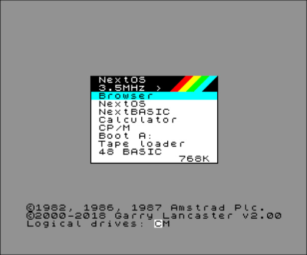

What is Neotron?
Neotron is an attempt to make computers simple again, whilst also taking advantage of the very latest in programming language development. We are saddened by chat clients that require multi-Gigabyte installs, and systems with hundreds of millions of lines of source code that no one person could ever hope to understand. We want to build a machine that is sized for an individual to comprehend, not a trillion-dollar corporation.
If you want a pithy sound-bite, it's like CP/M for tiny ARM microcontrollers, but written in Rust.
Tell me more...
Neotron is based around four fundamental components.
- A standardised OS interface, for portable Applications to call. This provides APIs for reading/writing files, accessing devices, writing to the screen, playing audio, etc.
- A standardised BIOS interface, for the Operating System to call. The BIOS abstracts the specific hardware implementation of the Video, Audio, UART, SPI, I2C, GPIO, Disk Drive, Parallel Printer, Keyboard and Mouse interfaces. By using the BIOS, we should be able to run the exact same Neotron OS on a variety of different microcontrollers.
- Use of the Rust Programming Language to write as much of the software as possible (we avoid raw assembler as much as possible, but we're happy to port existing applications that are written in C even if we avoid that language in the system software).
- The ARM Thumb-v7M instruction set (as supported by ARM Cortex-M based microcontrollers from the M3 and up). This is what allow us to run the same programs on microcontrollers from different vendors.
Looking back at classic home computers of the 1980s and early 1990s though, we see systems that were (and still are) simple enough to understand, or even - with time - to learn to master. Here's a rough comparison with just a few of the classic systems we have taken as inspiration:
| Feature | Neotron 32 | Neotron 340ST | IBM PC 5150 | BBC Micro Model-B | Commodore 64 | Macintosh 128K | Amstrad PCW8256 | Amiga 1000 | Acorn Archimedes A305 |
|---|---|---|---|---|---|---|---|---|---|
| Launch Year | 2020 | 2020 | 1981 | 1981 | 1982 | 1984 | 1985 | 1985 | 1987 |
| Instruction Set | ARMv7E-M | ARMv7E-M | Intel x86 | MOS 6502 | MOS 6502 | Motorola 68k | Zilog Z80 | Motorola 68k | ARM v2 |
| CPU | Cortex-M4 | Cortex-M7 | 8088 | 6502A | 6510 | 68000 | Z80A | 68000 | ARM2 |
| Clock Speed | 80 MHz | 216 MHz | 4.77 MHz | 2 MHz | 1 MHz | 8 MHz | 4 MHz | 8 MHz | 8 MHz |
| Low Level OS | Neotron BIOS | Neotron BIOS | IBM BIOS | Acorn MOS | KERNAL | Toolbox | XBIOS | Kickstart | RISC OS |
| High Level OS | Neotron OS | Neotron OS | PC-DOS 1.0 | Acorn MOS | N/A | System | CP/M Plus | AmigaDOS | RISC OS |
| Shell | Neotron Shell | Neotron Shell | COMMAND.COM | BBC BASIC | BASIC v2 | Finder | CP/M CCP | Workbench | RISC OS Desktop |
| Primary Language | Rust | Rust | Assembly / C | Assembly | Assembly | Object Pascal | Assembly | BCPL / C | Assembly / BBC BASIC |
| ROM | 256K | 1024K | 8K | 32K | 16K | 64K | 256 bytes | 256K | 512K |
| RAM | 32K | 8512K* | 16K to 256K | 32K | 64K | 128K | 64K | 256K | 512K |
| Self-hosting | No | No | Yes | Yes | No | Yes | Yes | Yes | Yes |
* Made up of 320K of internal SRAM and 8192K of external SDRAM
The IBM PC BIOS was stored in a ROM chip on the motherboard. It provided a certain level of hardware abstraction, with APIs for writing to the screen, setting the video mode and reading/writing from block devices such as floppy drives. The BIOS initialised the hardware, loaded the first sector of a chosen block device into RAM and then executed the code contained within. This was the Boot Sector and contained enough code to load the rest of the Operating System. PC-DOS made use of BIOS APIs, but often games would bypass both MS-DOS and the BIOS and access hardware directly. Famously, Microsoft was able to sell copies of PC-DOS (relabelled as MS-DOS) to manufacturers of 'PC compatibles', provided they had a BIOS ROM which offered the same (reverse-engineered) API as the IBM BIOS.
The BBC Micro had a very advanced Operating System for the time, known as the Acorn Machine Operating System (MOS). You could add extra ROMs to the system, such as the Disk Filing System (DFS). BBC BASIC was also very advanced for the time, including a built-in 6502 assembler.
The Commodore 64 contained two 8 KiB ROM chips - one contained the OS (called the KERNAL) and one contained a rebadged Microsoft 6502 BASIC. The KERNAL was very low level and Microsoft BASIC didn't include any commands to produce graphics or sound - developers were expected to interact with memory mapped hardware directly. The C64 KERNAL could be assembled using PET RESIDENT ASSEMBLER on a Commodore PET, but the Microsoft BASIC source code was written on a PDP-10 using the MACRO-10 assembler.
The original Apple Macintosh had a ROM on the motherboard which initialised the hardware and drew a graphical image on the screen indicating that the user should insert the System disk. The ROM then loaded the OS (known as System up to version 7, and Mac OS for versions 8 and 9) into RAM, along with a graphical desktop called Finder. Applications on the Macintosh (including the Finder) made use of a number of graphical routines stored in the ROM, known as the Macintosh Toolbox.
The Amstrad PCW8256 was similar to the Amiga 1000 in that the main BIOS was loaded from floppy disk. Going further than the Amiga though, the PCW didn't include a ROM chip at all. Instead the 256 bytes of bootstrap code were loaded from the microcontroller responsible for managing the printer interface. The bootstrap loaded the so-called XBIOS from floppy disk into RAM. XBIOS then initialised the hardware and loaded CP/M Plus (also known as CP/M 3.0). The shell was the familiar CP/M Command Console Processor (CCP), and both the OS and the CCP were the same across a wide range of CP/M machines from many different vendors, with the BIOS providing the hardware abstraction layer.
The Amiga 1000 hardware didn't include much in the way of a ROM at all. A basic bootstrap program stored in ROM was able to load most of the low-level OS (known as Kickstart) into a special write-only area of RAM. Kickstart could then load either the particular game being played, or AmigaDOS and a graphical shell known as Workbench. On later machines (such as the A500), the Kickstart was stored in ROM.
The Acorn Archimedes was first shipped with an OS in ROM called Arthur, but this was soon replaced with the more familiar RISC OS 2 (and later RISC OS 3). The entire OS - bootstrap, HAL, filesystem and GUI - was one on ROM chip, meaning it booted up very quickly, without needing to read from any sort of disc.
The key feature for many these systems (apart from the Commodore 64), was portability across other machines in the family (or, indeed, third-party clones). The PC, the Amiga, the Macintosh and CP/M all provided a platform, and if you respected certain limits when writing your software, that software was then portable across all the systems which provided that platform. For Neotron, this is a key concept - because microcontrollers vary so wildly, we have a BIOS that implements hardware abstraction, just like with the PC or CP/M machines. We then run a standard OS (indeed, the same OS image should work on every Neotron machine - more-or-less), either from ROM or loaded into RAM by the BIOS. On top of the OS is the text-mode Neotron Shell (like CP/M's CCP, or MS-DOS's COMMAND.COM). Booting to a graphical desktop would be nice, but given the Neotron 32 only has 32 KiB of RAM (barely enough for a low resolution frame-buffer), text mode is the default. Ultimately, a Neotron 32 should be able to 'compete' on a functional level with an un-expanded IBM PC 5150 or a BBC Microcomputer Model-B. The Neotron 340ST meanwhile, should be more like a Macintosh, Archimedes or Amiga in terms of functionality and in time we do hope to develop a GUI for this system.
As with the CP/M and MS-DOS machines, we hope that in the future there will be a wide range of machines in the Neotron family. These Neotron systems won't generally aim to be super cheap, although we will tend to target commodity microcontrollers that only cost circa $10 or less, so they shouldn't be outrageously expensive. They will, however, aim to be usable computers that can do interesting things, while being simple enough to understand in their entirety and open enough to allow you to gain that understanding.
What can I do with it?
You can do what you can do with most 1980s home computers:
- Type things on the keyboard.
- Use a joystick or a mouse.
- Manage files on internal or removable storage.
- Load programs from internal or removable storage.
- Type in your own programs.
- Put text and graphics on the screen.
- Make various beepy noises.
- Connect various internal expansion cards or external peripherals.
- Expand the system in ways the designer couldn't imagine.
But most importantly, you can learn the fundamentals of what it takes for a computer to be a computer. And you can study the source code and hardware schematics required to make that happen. You can even take the designs and go off and produce your own version - maybe to add a specific interface for a particular peripheral that interests you - all with no licence fees to pay.
What can't I do with it?
A Neotron system will probably never:
- Support multiple processes (although Windows 3.1-style co-operative task switching is plausible).
- Support 3D graphics (e.g. OpenGL).
- Support virtual addressing (i.e. make use of an MMU).
- Be POSIX compatible.
- Have a huge software library (or probably any real library of software).
- Run existing MS-DOS, Windows or Linux programs.
- Be able to run
rustc. - Have a port of Rust's
libstd. - Be directly targetable from Rust with
--target=thumbv7em-unknown-neotron-eabi. - Be useful for day to day use.
- Be finished.
If you want a decent open-source UNIX Operating System, have a look at FreeBSD (or NetBSD, or OpenBSD). If you want a small teaching-oriented open-source UNIX Operating System, look at XV6, or maybe MINIX 3. If you want to learn about Linux, try Linux from Scratch. If you want to learn an ancient Arm based Operating System which still has a flavour of the original BBC Microcomputer, look at RISC OS (it's open source now). If you want a proper OS written in Rust, look at Redox. And if you want to do any of that on a system you don't have, try qemu, or rpcemu.
Is this a good idea?
It's certainly not a profitable idea. It's not even likely to be an efficient use of our time and resources. But it is proving to be a fun and educational project to work on, and we hope others find it useful and/or enjoyable too.
But what about ${EXISTING_PRODUCT}?
Raspberry Pi
Yes, you can buy a Raspberry Pi for a little as $5 - and it's a wonderful product that has done arguably more than anything since the BBC Microcomputer in terms of putting hardware you can actually program into the hands of young people. But, the downside is that you get a big, complicated piece of silicon, a proprietary GPU subsystem, 25 million lines of kernel source code, and even more in a user-land which has parts dating back over 30 years. No one person could hope to understand all of that! While we could probably port the Neotron OS to the Raspberry Pi, we'd have to treat the video sub-system as a black-box (like RISC OS does) and the complexity and lack of documentation of that subsystem presents a big barrier to fully understanding the system. Not to mention the the fact that only partial schematics are available, there are no PCB designs available, and there's no general availability on the main processor. It does what it needs to do for its target market quite admirably - but it's not a Neotron.
x86 based systems, like the original IBM PC
You could build yourself a clone of the original IBM PC (kits do exist), but it involves a lot of components that are very difficult to obtain nearly 40 years since that design first came out. Rust is also designed around a flat memory model (rather than the segmentation:offset model used by the 16-bit 8086), and that means using at least a 32-bit Intel 80386. And, of course, these are plain CPUs rather than microcontrollers, so you'll need to find a 'chipset' containing interrupt controller, DRAM memory controller and timers; as well as separate video, sound and IO sub-systems. Our System-on-Chip based design simplifies the motherboard design and reduces cost, and unlike with modern x86 SoCs, we don't have to deal with complicated legacy subsystems such as UEFI, ACPI or PCI.
6502 based systems (like the PE6502 and Commander X16)
You could build a 6502 based system, and many people do, but the Rust programming language doesn't (and probably never will) support an 8-bit CPU with only 256 bytes of stack.
68000 based systems
At the present time, there is no 68k backend in LLVM. If there was, a 68000 system would certainly make an interesting alternative to Neotron.
PowerPC based systems
LLVM does have a PowerPC backend, but unfortunately most PowerPC based chips only come in monster 380+ pin BGA packages, with multiple power rails. This unfortunately puts them beyond the scope of a simple hobby project, much as the author would love to build a machine that harks back to the IBM RS/6000 and PowerMacintosh machines of the 1990s.
RISC-V based systems
There is an increasing number of RISC-V based microcontrollers with very small SRAMs, matched by an increasing number of multi-core 64-bit SoCs designed to run Linux from a huge bank of DDR3. At the current time, however, there isn't much in the middle.
A Neotron system built around an open-source RISC-V code run from an FPGA would be an interesting way to increase the openness of the system and remains a future possibility.
SPARC based systems
The Gaisler LEON3 is available in VHDL form under the GPL, along with a number of other components required to make a full SoC. The LEON3 implements the SPARC V8 ISA, support for which is available in the Rust compiler. However, this would require an FPGA based system and it's unknown whether the full GRLIB SoC would fit into any of the FPGAs supported by the various open-source FPGA synthesis tools (such as the Lattice iCE40).
Atmel AVR based systems
Many people have built Atmel AVR based systems, but those CPUs are fairly limited in terms of performance and tend to need to be programmed in raw assembler. There is a Rust AVR port, but it's only in alpha state at the moment.
What is this book?
This book describes the Neotron system - from the hardware schematics, all the way up to how to write applications for the system. It is intended to be the canonical reference, although where the source code differs from what is described in this book, we reserve the right to be pragmatic and change either to match the other (or leave them in disagreement...). This book also represents our latest thoughts on a particular topic, and the source code may lag behind while we get around to the implementation. We endeavour to note where this is the case.
Versioning
Each component has a semantic version number - major.minor.patch. The assocation is:
- The BIOS will require a compatible hardware version.
- The OS will require a compatible BIOS version.
- The Shell and Applications will require a compatible OS version.
Open Source and Commercial Sales
Neotron is designed to be open - the user must have free rein to inspect the source code and the schematics, and change them to suit their needs. To this end, the main BIOS and OS implementations are licensed under the GNU Public Licence v3 or any later version. To encourage the adoption of Rust for embedded development, most of the library crates developed for this project are licensed under both the MIT and Apache 2.0 licences, just like the Rust compiler itself. We do intend to sell a range of kits and pre-built PCBs, but you can (and should!) take our designs as inspiration and put your own spin on them.
This book is licensed under Creative Commons CC-BY-SA 4.0. Any source examples in this book may also be used under the MIT or Apache 2.0 licences.
Credits
Neotron started as a project called 'Monotron', by @thejpster. This was based on the work of the Rust Embedded Working Group, and inspiration from the following (in no particular order):
- Colour Maximite - A modern PIC32 based single-board home computer.
- PE6502 - A modern 6502 based single-board home computer.
- Gigatron - A single-board home computer, with a custom CPU built from TTL logic chips.
- Commander X16 - A single-board home computer, with a 6502 and an FPGA based video chip.
- Craft - Demonstrates bit-bashing VGA from an AtMega88
- AVR-ISA - Demonstrates driving an ISA bus (and an ISA VGA card) driven from an AtMega128
- The Commodore 64C - @thejpster's first home computer
- The BBC Microcomputer range (the Model B through to the Archimedes A3000) - as used in UK schools in the 1980s
- The Amstrad range of CP/M machines, particularly the PCW9512
After meeting @IGBC at Oxidize 2019, discussions started around a next-generation system with higher performance. This led to the Neotron 1000, and then to the whole Neotron concept.
Licence
Neotron is designed to be open - the user must have free rein to inspect the source code and the schematics, and change them to suit their needs. To this end, the main BIOS and OS implementations are licensed under the GNU Public Licence v3 or any later version. To encourage the adoption of Rust for embedded development, most of the library crates developed for this project are licensed under both the MIT and Apache 2.0 licences, just like the Rust compiler itself. We do intend to sell a range of kits and pre-built PCBs, but you can (and should!) take our designs as inspiration and put your own spin on them.
This book is licensed under Creative Commons CC-BY-SA 4.0. Any source examples in this book may also be used under the MIT or Apache 2.0 licences.
Credits
Neotron started as a project called 'Monotron', by @thejpster. This was based on the work of the Rust Embedded Working Group, and inspiration from the following (in no particular order):
- Colour Maximite - A modern PIC32 based single-board home computer.
- PE6502 - A modern 6502 based single-board home computer.
- Gigatron - A single-board home computer, with a custom CPU built from TTL logic chips.
- Commander X16 - A single-board home computer, with a 6502 and an FPGA based video chip.
- Craft - Demonstrates bit-bashing VGA from an AtMega88
- AVR-ISA - Demonstrates driving an ISA bus (and an ISA VGA card) driven from an AtMega128
- The Commodore 64C - @thejpster's first home computer
- The BBC Microcomputer range (the Model B through to the Archimedes A3000) - as used in UK schools in the 1980s
- The Amstrad range of CP/M machines, particularly the PCW9512
After meeting @IGBC at Oxidize 2019, discussions started around a next-generation system with higher performance. This led to the Neotron 1000, and then to the whole Neotron concept.
The Neotron BIOS
Introduction
The Neotron BIOS is the hardware-abstraction layer for the Neotron Operating System. It allows the OS to run on different hardware platforms with the minimum number of changes.
+-------+-------------+
| | |
| Shell | Application |
| | |
+-------+-------------+
| |
| Operating System |
| |
++===================++
|| ||
|| BIOS ||
|| ||
++===================++
| |
| Raw Hardware |
| |
+---------------------+
What goes in the BIOS and what goes in the OS?
As a general rule, the BIOS should contain all the drivers for the main system-on-chip (SoC) in that particular Neotron system. It should also understand which pins on the SoC have been assigned to which functions. It is therefore a function of the netlist for the main PCB, and the components fitted to it.
If a particular function might apply to SoCs from different manufacturers, or to an expansion card that could be inserted into multiple different models of Neotron system, it is probably better placed in the Neotron OS.
Interfaces
A BIOS should offer an interface upwards to the OS so that the OS can:
- Discover the hardware in the system
- Select and use various video modes:
- Text modes
- Bitmap graphics modes
- Split modes
- Layered Modes
- Hooking video scan-line interrupts
- Read any keyboard key events
- Access (read from, write to and/or configure) any Serial/UART interfaces
- Access any I²C buses, and any devices attached to its bus
- Access any SPI buses, and any devices attached to its chip selects
- Access any USB Host Controllers, and any USB devices attached
- Access any block devices, via whatever interface they are connected to
- Read from / write from any audio FIFOs
- Configure a periodic 'system tick' timer
- Obtain / set the current calendar time
- Measure elapsed time since boot-up (e.g. in microseconds)
- Hook interrupts for the external IRQ lines
- Access any OS-specific non-volatile configuration
On top of these APIs sits the Neotron OS, which should be portable with almost zero changes to any device with a Neotron BIOS. While you could write an application which uses the BIOS directly, most applications will use the higher-level APIs exposed by the Neotron OS.
Configuration
Many Neotron sytems will have an element of user configuration to them - e.g. which cards are fitted to which expansion slots, or whether an optional item has been fitted to the PCB. To handle this, it is expected that the BIOS have some kind of configuration application, and some non-volatile storage that will hold the configuration across a power cycle. Typically this will be in the battery-backed real-time clock, but it could equally be in an EEPROM.
Calling a BIOS API
On ARM systems, calling a kernel API is usually done through a SWI or SVC
machine instruction. This effectively triggers an interrupt, putting the CPU
into interrupt mode where it starts executing the SWI exception handler.
Unfortunately, calling the SWI instruction and passing arguments via registers
can only be performed from assembly language, and is not supported by the
cortex-m crate at this time.
Monotron instead used a simple alternative - when the application was started by
the OS, the OS passed it a pointer to a structure of function pointers. You can
think of this as being like an old-fashioned jump table. When the application
wanted to get the OS to do something, the application just called the
appropriate function through the given pointer. The downside was that the
Monotron OS functions used the same stack as the application, and it was
impossible for an application to exit back to the OS unless it returned from
main (i.e. there was no exit() function you could call). The Neotron BIOS
accepts these downsides in the same of simplicity, and takes the Monotron
approach - at least for the BIOS-OS ABI.
The BIOS is responsible for starting the system and performing hardware
initialisation. It will also search for the OS, either in Flash memory, on disk, or
perhaps even loaded over a UART. The OS then has its initialisation function
called, to which the structure of BIOS function calls is passed. The
initialisation function is specified as a function pointer stored at a
specific offset (most likely the first four bytes of the OS image). To avoid
undefined behaviour, that initialisation function should memset the .bss
section to all-zeroes and, if necessary, initialise the .data section using
values stored in Flash memory.
Most of the BIOS APIs will be 'blocking' - that is, the function call will not return until the BIOS has completed the operation (e.g. read the sector from disk, or written the bytes to the UART). It is possible in the future that BIOS APIs will be added which allows operations to be asynchronous - that is, to return immediately once the operation has been queued and then either call some function or set some marker value in memory once the operation has been completed. Such an API is more complex to develop, and has interesting challenges around ensuring the memory passed to the function remains available (i.e. it isn't just on the stack of the calling function). However, these APIs are generally more efficient in terms of CPU time, as the CPU does not have to waste cycles spinning in the main thread whilst it waits for the operation to complete - for example, you could be writing some sectors to disk and performing an I²C read from the HID controller asynchronously, whilst also calculating new display graphics and audio in the main thread.
For now however, the blocking APIs were sufficient for MS-DOS, and they will be sufficient here.
Why split the OS and the BIOS?
We could take the Linux / Windows NT approach, with a boot-loader that performs the bare minimum required to get the kernel (or, in our case, what we call the 'OS') into RAM and start it running. The boot-loader for a PC is usually a UEFI BIOS but on an older system might be an IBM PC-compatible 'legacy' BIOS. The operations performed typically include DRAM setup, rudimentary console setup (either frame-buffer or over UART) and accessing the kernel from some kind of block device or non-volatile memory (e.g. SD Card). The kernel then replaces the boot-loader, which is never used again.
Because our Neotron systems generally have Flash memory, we don't actually need a boot-loader in that sense. Instead, we implement something more like the interface provided by an IBM PC-compatible 'legacy' BIOS for running MS-DOS, which itself was modeled on the design of CP/M's BIOS and BDOS components. In that case, the BIOS provides a fixed application binary interface (ABI) which is unchanging. This allowed development of MS-DOS (and CP/M) to be performed against a fixed target (or rather, multiple implementations of a fixed ABI), allowing the same copy of MS-DOS or CP/M to run on a variety of PCs from a variety of manufacturers. The alternative would be to require all of the drivers and board support packages to be added into OS kernel (as usually happens with Linux), or for the drivers to be loaded from disk at boot-up (as with Windows). We have seen with Linux that, for whatever reason, not all boards and peripherals get their driver support upstreamed, and because Linux does not maintain a binary ABI for drivers, anything that isn't upstream quickly becomes obsolete. As a case in point, try to update the version of Linux used on circa-2015 Android tablet - you'll quickly find yourself stuck on an old Kernel version with bespoke patches (or worse, binary blobs) that weren't upstreamed or open-sourced. Whilst Windows maintains a binary ABI for drivers, they are usually closed-source and of varying quality, leading to system instabilities that are almost impossible to debug.
The Neotron approach allows for:
- Less centralised development: the Neotron developers do not need to look after (or even know about) your BIOS implementation, as long as it meets the ABI
- Easier upgrades: any system with a Neotron BIOS should be updateable to a newer version of the Neotron OS
- A smaller OS: the amount of code in the OS (e.g. for drivers) is reduced, which means the OS is easier to understand and review
- Simpler builds: everyone can run basically the same build of the OS (subject to some constraints about the specific Arm architecture being targeted) as everything board specific is in the BIOS
- Better portability: because anything CPU specific is in the BIOS, it should
- in theory - be possible to port the Neotron OS to another CPU architecture with just a re-compile.
The downsides are:
- It's slower: there can be no optimisation across the OS / BIOS boundary.
- Limited support: it's harder to add new classes of peripheral bus (e.g. if we ever wanted to add support for I3C), as the old BIOSes won't know about them.
- Harder to design: a binary-stable ABI is harder to design in Rust than a
plain function-call API, as you have to use
extern "C"and#[repr(C)], and therefore can't use significant portions of the Core Library in your API definition.
Testing
For BIOS testing, there will be a special 'cut-down' version of the OS which offers only a very basic console, and direct access to all the BIOS APIs via that console.
Character Sets
The video display engines on a Neotron system only support monospaced 8-bit fonts (that is, fonts with only 256 glyphs and where each glyph occupies the same horizontal space on screen), and so the mapped text buffer memory works exclusively in the character set defined by the font. The rest of the BIOS API works exclusively in UTF-8 encoded text, and mapping functions are provided by the BIOS to convert from a Unicode codepoint to the font-specific character set. Generally the first 128 glyphs will match basic ASCII (and hence the first 128 Unicode code points) for performance reasons, although that isn't necessarily required.
It is possible that Neotron could be adapted to support multi-byte character sets (e.g. for Chinese, Japanese or Korean text display where more than 256 glyphs are required), but there is no support for that planned at this time.
The Neotron BIOS - API Calls
Note that these systems calls are listed here for documentation and discussion
purposes. The canonical reference is the BIOS source code. Note also that these
API must be extern "C", which means we can't use references, str-slices,
Option or Result. Instead we provide our own extern "C" alternatives.
Timeouts
Some functions accept a timeout argument. If this argument is None, then the
function blocks. Otherwise the function waits for up to the period specified, or
the operation is complete, whichever occurs first.
#![allow(unused)] fn main() { struct Timeout(...); impl Timeout { fn frames(frames: u16) -> Timeout; fn milliseconds(ms: u16) -> Timeout; fn microseconds(us: u16) -> Timeout; } }
All video modes on Neotron are 60 Hz and so 1 frame is approximately 16.667ms.
Metadata and Versioning
api_version_get
#![allow(unused)] fn main() { struct SemanticVersion(...); fn api_version_get() -> SemanticVersion; }
Gets the version number of the BIOS API. You need this value to determine which of the following API calls are valid in this particular version.
bios_info_get
#![allow(unused)] fn main() { fn bios_info_get() -> ApiStrRef; }
Returns a pointer to a static string slice. This string contains the version number and build string of this particular BIOS.
System Functions
system_memory_info_get
#![allow(unused)] fn main() { enum SystemMemoryType { /// An on-chip memory optimised for code InstructionTightlyCoupled, /// An on-chip memory optimised for data DataTightlyCoupled, /// An on-chip Static RAM that can be used for code or data InternalStatic, /// An on-chip Dynamic RAM that can be used for code or data InternalDynamic, /// An off-chip Static RAM that can be used for code or data ExternalStatic, /// An off-chip Dynamic RAM that can be used for code or data ExternalDynamic, } struct SystemMemoryInfo { /// A human-readable label for this region name: ApiStrRef, /// The first address in the region (e.g. 0x0000) start_addr: usize, /// The length of the region length: usize, /// The memory type memory_type: SystemMemoryType, } fn system_memory_info_get(index: u8) -> Option<SystemMemoryInfo> }
Gets information about the regions of memory in the system. An OS can use this
to work out where it can store the heap, and load any applications to. Regions
should be ordered according to their relative performance, with the fastest
region listed first. The fastest regions will be used for the most commonly used
data structures (e.g. the system stack). Regions labelled as
InstructionTightlyCoupled will ony be used for code (e.g code loaded from
disk) and not for data (e.g. variables).
Neotron OS has no support for memory refresh. If this is required, it must be arranged by the BIOS in the background.
system_interrupt_query
#![allow(unused)] fn main() { struct InterruptMask(u16); enum Interrupt { ExtInterrupt0, ExtInterrupt15 } type InterruptFunction = fn(interrupt: Interrupt); fn system_interrupt_enable(interrupt: Interrupt); fn system_interrupt_get_enabled() -> InterruptMask; fn system_interrupt_disable(interrupt: Interrupt); fn system_interrupt_hook(interrupt: Interrupt, fn: InterruptFunction) -> Option<InterruptFunction>; }
The Neotron BIOS has up to 16 external interrupts, numbered 0 to 15. Note that this only applies to external interrupts - that is, from expansion cards fitted to expansion slots, or peripherals on the baseboard that are connected like expansion cards. These functions do not apply to internal interrupts (e.g. for UART data received) - see the device specific APIs for any interrupt support that may be available.
system_reboot
#![allow(unused)] fn main() { fn system_reboot() -> !; }
Reboots the system.
system_halt
#![allow(unused)] fn main() { fn system_halt() -> !; }
Halts the system. The OS should display some 'This system is now safe to power off' message first, in case the hardware can't actually power itself off.
sytem_control
#![allow(unused)] fn main() { fn sytem_control(command: u32, data: *const u8, data_len: usize) -> Result<u32, Error>; }
Sends a BIOS-specific command. See your BIOS user guide for details.
Serial Ports (UARTs)
serial_get_info
#![allow(unused)] fn main() { enum SerialType { /// An RS-232 interface, but at TTL voltages. Typically used with an /// FTDI FT232 cable. TtlUart, /// An RS-232 interface Rs232, /// A USB Device implementing Communications Class Device (also known as /// a USB Serial port). The USB Device implementation may be on-chip /// (handled by the BIOS), or off-chip. UsbCdc, /// A MIDI interface Midi, /// A Commodore Serial interface Cbm, /// An RS-485 bus Rs485, } struct SerialInfo { name: ApiStrRef, type: SerialType, } fn serial_get_info(device_idx: u8) -> Option<SerialInfo>; }
Get information about the Serial ports in the system. Serial ports are ordered
octet-oriented pipes. You can push octets into them using a 'write' call, and
pull bytes out of them using a 'read' call. They have options which allow them
to be configured at different speeds, or with different transmission settings
(parity bits, stop bits, etc) - you set these with a call to SerialConfigure.
They may physically be a MIDI interface, an RS-232 port or a USB-Serial port.
There is no sense of 'open' or 'close' - that is an Operating System level
design feature. These APIs just reflect the raw hardware, in a similar manner to
the registers exposed by a memory-mapped UART peripheral.
serial_configure
#![allow(unused)] fn main() { enum SerialParity { Odd, Even, None } enum SerialHandshaking { None, RtsCts, } enum SerialStopBits { One, Two } enum SerialDataBits { Seven, Eight, } struct SerialConfig { data_rate_bps: u32, data_bits: SerialDataBits, stop_bits: SerialStopBits, parity: SerialParity, handshaking: SerialHandshaking, } fn serial_configure(device_idx: u8, config: Option<SerialConfig>) -> Result<(), Error>; }
Set the options for a given serial device. An error is returned if the options are invalid for that serial device (e.g. you have picked a data rate that isn't supported).
Passing None will power-down and/or deactivate the peripheral to the extent
supported by the peripheral.
serial_write
#![allow(unused)] fn main() { fn serial_write(device_idx: u8, data: &[u8], timeout: Option<Timeout>) -> Result<usize, Error>; }
Write octets to a serial port. There is no sense of 'opening' or 'closing' the
device - serial devices are always open. If the return value is Ok(n), the
value n may be less than data.len(). If so, that means not all of the data
could be transmitted - only the first n octets were.
serial_read
#![allow(unused)] fn main() { fn serial_read(device_idx: u8, buffer: &mut [u8], timeout: Option<Timeout>) -> Result<usize, Error>; }
Read octets from a serial port. There is no sense of 'opening' or 'closing'
the device - serial devices are always open. If the return value is Ok(n),
the value n may be equal or less than buffer.len() (never great). If less,
that means not all of the buffer could be filled with received data - only the
first n octets were.
serial_flush_write
#![allow(unused)] fn main() { fn serial_flush_write(device_idx: u8, timeout: Option<Timeout>) -> Result<(), Error>; }
Wait until any bytes previously accepted by serial_write have actually left the
UART device (as opposed to just sitting in a hardware buffer).
serial_flush_read
#![allow(unused)] fn main() { fn serial_flush_read(device_idx: u8, timeout: Option<Timeout>) -> Result<(), Error>; }
Empty any serial buffers so that, if no further characters are received on the UART, serial_read will return Ok(0).
serial_interrupt_register
#![allow(unused)] fn main() { enum SerialInterruptFlag { /// `serial_read` will return a non-zero value. RxReady = 1, /// The last `serial_write` has completed. TxComplete = 2, /// A *break* condition has been received Break = 4 } struct SerialInterruptFlagSet(u32); type SerialCallback = Fn(device_idx: u8, flags: SerialInterruptFlagSet); fn serial_interrupt_register(device_idx: u8, function: SerialCallback, flags: SerialInterruptFlagSet) -> Result<(), Error>; }
When any of the properties specified in flags are true, the given function
will be executed from the hardware interrupt handler. Note that calling Neotron
BIOS functions from interrupt handlers is not, in general, supported, and so the
callback should set some state and to inform the main thread that something has
occurred.
Current Time
timestamp_get
#![allow(unused)] fn main() { fn timestamp_get() -> u64 }
Returns a value indicating how long the system has been running. This is typically the number of video lines generated since the system was powered on. This value is guaranteed to always be greater than (or equal to) the last time this function was called - unless the system is rebooted.
timestamp_rate
#![allow(unused)] fn main() { fn timestamp_rate() -> u16 }
Returns the number of timestamp ticks in a second. You can use this to convert the difference between two TimestampGet values into a duration in seconds.
time_get
#![allow(unused)] fn main() { struct Time { seconds_since_epoch: u32, ticks_since_second: u16 } fn time_get() -> Time; }
Get the current wall time. The Neotron BIOS does not understand time zones,
leap-seconds or the Gregorian calendar. Nor does it promise that time is
monotonic - users can (and will) move the clock backwards and forwards in time.
It simply stores time as an incrementing number of seconds since some epoch, and
the number of ticks (typically 60 Hz, but see TimestampRate) since that second
began. A day is assumed to be exactly 86,400 seconds long. This is a lot like
POSIX time, except we have a different epoch - the Neotron epoch is
2000-01-01T00:00:00Z. It is highly recommend that you store UTC in the BIOS and
use the OS to handle time-zones.
time_set
#![allow(unused)] fn main() { fn time_set(time: Time); }
Set the current wall time to the given value. See TimeGet.
I2C Bus
i2c_bus_get_info
#![allow(unused)] fn main() { enum I2CBusSpeed { // 10kbps Low, /// 100kbps Standard, /// 400kbps Fast, /// 1Mbps FastPlus, /// 3.4Mbps High, /// 5Mbps UltraFast, } struct I2CBusInfo { name: ApiStrRef, supported_speeds: &[I2CBusSpeed], } fn i2c_bus_get_info(bus_idx: u8) -> Option<I2CBusInfo>; }
Gets information about the I2C buses in the system..
i2c_bus_set_speed
#![allow(unused)] fn main() { fn i2c_bus_set_speed(bus_idx: u8, speed: I2CBusSpeed) -> Result<(), Error>; }
Set the I2C bus speed.
i2c_device_write_read
#![allow(unused)] fn main() { fn i2c_device_write_read(bus_idx: u8, address: u8, out_buffer: &[u8], in_buffer: &mut [u8]) -> Result<(), Error>; }
Writes data to the I2C bus, then reads data. Performs the following operations (courtesy of the Embedded HAL documentation):
+---+-----+---+--+---+--+---+---+--+---+--+-----+---+--+---+--+---+---+--+----+--+
Main | ST|SAD+W| |O0| |O1| |...|OM| |SR|SAD+R| | |MAK| |MAK|...| |NMAK|SP|
+---+-----+---+--+---+--+---+---+--+---+--+-----+---+--+---+--+---+---+--+----+--|
Secondary | | |SAK| |SAK| |SAK|...| |SAK| | |SAK|I0| |I1| |...|IN| | |
+---+-----+---+--+---+--+---+---+--+---+--+-----+---+--+---+--+---+---+--+----+--+
Where:
- ST = start condition * SAD+W = secondary address followed by bit 0 to indicate writing * SAK = secondary acknowledge * Oi = ith outgoing byte of data * SR = repeated start condition * SAD+R = secondary address followed by bit 1 to indicate reading * Ii = ith incoming byte of data * MAK = main acknowledge * NMAK = main no acknowledge * SP = stop condition
The given address must in the range 1..127. The BIOS does not handle device detection or even know what devices are fitted - that is all handled in the operating system.
SPI Bus
spi_bus_get_info
#![allow(unused)] fn main() { struct SpiBusInfo { /// A name for this SPI bus name: ApiStrRef, /// The number of unique chip select signals associated with this SPI bus num_chip_selects: u8, /// The maximum SPI bus speed supported max_bus_speed_bps: u32, /// Will be 1, 2 or 4 max_bus_width_bits: u8, } fn spi_bus_get_info(bus_idx: u8) -> Option<SpiBusInfo>; }
Gets information about the SPI buses in the system.
spi_bus_configure
#![allow(unused)] fn main() { enum SpiMode { Mode0, Mode1, Mode2, Mode3 } struct SpiBusConfig { bus_speed_bps: u32, bus_width_bits: u8, mode: SpiMode } fn spi_bus_configure(bus_idx: u8, config: Option<SpiBusConfig>) -> Result<u32, Error>; }
Configure the SPI bus. Where arbitrary speeds are not supported by the bus, the BIOS will select the closest supported speed which is not greater than the given speed.
spi_device_transfer
Write to and read from an SPI device.
#![allow(unused)] fn main() { enum MutableDataBuffer<'a> { U8(&'a mut [u8]), U16(&'a mut [u16]), U32(&'a mut [u32]), } fn spi_device_transfer(bus_idx: u8, device_idx: u8, word_size: u8, buffer: MutableDataBuffer) -> Result<(), Error>; }
Writes data to an SPI device and reads data from the same SPI simultaneously. Data is both read from and written to the same buffer. When writing with a word size of 8 or less, each word should be stored in the least-significant bits of each u8 in a MutableDataBuffer::U8. When writing with a word size of 8 < x <= 16, each word should be stored in the least-significant bits of each u16 in a MutableDataBuffer::U16. When writing with a word size of 16 < x <= 32, each word should be stored in the least-significant bits of each u32 in a MutableDataBuffer::U32.
spi_device_write
Write to an SPI device, discarding any read data.
#![allow(unused)] fn main() { enum DataBuffer<'a> { U8(&'a [u8]), U16(&'a [u16]), U32(&'a [u32]), } fn spi_device_write(bus_idx: u8, device_idx: u8, buffer: DataBuffer) -> Result<(), Error>; }
Universal Serial Bus
USBxxx
This is where the Neotron system is a USB Host and the OS wants to access any attached USB devices.
TODO: Add a bunch of functions here along the lines of the USB OHCI. Then check we can implement them using a Tiva-C 123 and an STM32H7.
General-Purpose Input/Output
gpio_port_get_info
#![allow(unused)] fn main() { struct GpioPortInfo { name: ApiStrRef, num_pins: u8, } #[derive(Copy, Clone)] struct GpioPort(pub u8); #[derive(Copy, Clone)] struct GpioPin(pub u8); #[derive(Copy, Clone)] struct GpioPinMask(pub u32); fn gpio_port_get_info(port: GpioPort) -> Option<GpioPortInfo>; }
Gets information about the GPIO ports on this system. Note that each GPIO port can only have up to 32 pins.
gpio_pin_get_info
#![allow(unused)] fn main() { enum GpioPinMode { InputFloating, InputPullUp, InputPullDown, Output, OutputOpenCollector, } struct GpioPinInfo { name: ApiStrRef, state: GpioPinMode } fn gpio_pin_get_info(port: GpioPort, pin: GpioPin) -> Option<GpioPinInfo>; }
Gets information about the GPIO pins on a specific port.
gpio_pin_set_mode
#![allow(unused)] fn main() { fn gpio_pin_set_mode(port: GpioPort, pin: GpioPin, mode: GpioPinMode) -> Result<(), Error>; }
Sets the mode for a GPIO pin.
gpio_port_set_mode
#![allow(unused)] fn main() { fn gpio_port_set_mode(port: GpioPort, mode: &[Option<GpioPinMode>]) -> Result<(), Error>; }
Sets the mode for a number of pins in a GPIO port. The length of mode must be in the range 1 to num_pins. You can pass None to leave a pin's mode unchanged.
gpio_pin_set_level
#![allow(unused)] fn main() { fn gpio_pin_set_level(port: GpioPort, pin: GpioPin, level: bool) -> Result<(), Error>; }
Sets the output level for an Output GPIO pin. The behaviour if this pin is not currently configured as an output is undefined.
gpio_port_set_levels
#![allow(unused)] fn main() { fn gpio_port_set_levels(port: GpioPort, mask: GpioPinMask, levels: u32) -> Result<(), Error>; }
Sets the level for a number of pins in a GPIO port. Only pins with a corresponding 1 bit in mask get set to the corresponding bit in level.
gpio_pin_get_level
#![allow(unused)] fn main() { fn gpio_pin_get_level(port: GpioPort, pin: GpioPin) -> Result<bool, Error>; }
Gets the input level for an Input GPIO pin. The behaviour if this pin is not currently configured as an input is undefined.
gpio_port_get_levels
Gets the level for a number of pins in a GPIO port. Only pins with a corresponding 1 bit in mask get a bit set in the returned value.
#![allow(unused)] fn main() { fn gpio_port_get_levels(port: GpioPort, mask: GpioPinMask) -> Result<u32, Error>; }
Delay functions
delay
#![allow(unused)] fn main() { fn delay(period: Timeout); }
Delays for at least a given amount of time. Because some systems have lengthy interrupt routines (e.g. CPU powered video rendering), the application may be delayed for considerably more than the requested period (but never less than the requested period).
delay_vblank
#![allow(unused)] fn main() { fn delay_vblank(); }
Delays until the next vertical blanking interval. That is, it waits until the screen has finished drawing and the raster beam is in the off-screen portion. During this time the video memory can be safely updated without causing tearing on the screen. Only supported if you have built-in video.
Video functions
video_mode_get_info
#![allow(unused)] fn main() { #[derive(Copy, Clone)] struct VideoMode(pub u8); enum VideoAttrFormat { // No attribute bytes None, // Suports the given number of foreground and background colours IndexColour(u8), } struct VideoTextModeInfo { /// Number of columns of text on screen width: u8, /// Number of rows of text on screen height: u8, /// Number of bytes per row (must be >= cols * 2) row_size: usize, /// Do we support colour or other attributes? attr_format: VideoAttrFormat, /// How many pages of text are available num_pages: u8, /// Can the user supply a new bitmap font? If so, see `VideoModeFontSet`. support_soft_font: bool, } enum ChunkyPixelFormat { /// 1 bit per pixel monochrome. Grey1, /// 8-bit greyscale (256 shades of grey), packed as one pixel per byte. Grey8, /// 4-bit colour (16 colours), packed two pixels per byte, with pallette lookup. Indexed8, /// 8-bit colour (256 colours), packed as one pixel per byte, with pallette lookup. Indexed8, /// 16-bit colour (65536 colours), using two bytes per pixel. Colour16, /// 24-bit colour, packed in four-byte words. Colour32 } struct VideoChunkyBitmapModeInfo { /// Number of pixels across the screen width: u16, /// Number of pixels down the screen height: u16, /// Number of bytes per row (must be >= width * bits-per-pixel / 8) row_size: usize, /// How many pages of video are available (e.g. 2 for double-buffering) num_pages: u8, /// What format are the pixels in? Determines how many bits are required for each pixel. pixel_format: ChunkyPixelFormat, /// How big each pallette entry is. '4' would mean each pallette entry gives a 4-bit (16-colour) value /// (like CGA), whilst 18 would mean each pallette entry gave an 18-bit /// (262,144-colour) value (like VGA) pallete_entry_size_bits: u8, } enum PlanarPixelFormat { /// 2 planes, 1-bpp each, for 4 colours (with pallette look-up) Colour2, /// 3 planes, 1-bpp each, for 8 colours (with optional pallette look-up) Colour3, /// 4 planes, 1-bpp each, for 16 colours (with optional pallette look-up) Colour4, /// 3 planes, 8-bpp (i.e. one byte per pixel) each (24-bit true-colour) Colour3x8, } struct VideoPlanarBitmapModeInfo { /// Number of pixels across the screen width: u16, /// Number of pixels down the screen height: u16, /// Number of bytes per row (must be >= width * bits-per-pixel / 8) row_size: usize, /// How many pages of video are available (e.g. 2 for double-buffering) num_pages: u8, /// What format are the pixels in? Determines how many bitplanes are required for each pixel. pixel_format: PlanarPixelFormat, /// How big each pallette entry is. '4' would mean each pallette entry gives a 4-bit (16-colour) value /// (like CGA), whilst 18 would mean each pallette entry gave an 18-bit /// (262,144-colour) value (like VGA) pallete_entry_size_bits: u8, } enum VideoModeInfo { Disabled, Text(VideoTextModeInfo), ChunkyBitmap(VideoChunkyBitmapModeInfo), } fn video_mode_get_info(mode: VideoMode) -> Option<VideoModeInfo>; }
Gets information about a specific video mode. Returns None if that video mode is not supported. Video Mode 0 is always 'no video' - i.e. the video output is disabled or not available.
video_mode_get
#![allow(unused)] fn main() { fn video_mode_get() -> VideoMode; }
Gets which video mode the system is currently in. A value of zero means video is currently disabled.
video_mode_set
#![allow(unused)] fn main() { fn video_mode_set(mode: VideoMode) -> Result<(), Error>; }
Selects a new video mode. Selecting any mode where VideoModeGetInfo(mode) returns None will give an error.
video_font_get
#![allow(unused)] fn main() { struct FontInfo { font: *const u8, font_len: usize, glyph_width_pixels: u8, glyph_height_rows: u8, } fn video_font_get() -> Result<FontInfo, Error>; }
Get a information about the currently loaded bitmap font. See video_font_set.
video_font_set
#![allow(unused)] fn main() { fn video_font_set(font_info: FontInfo) -> Result<(), Error>; }
Change the current bitmap font. Pixel data is laid out row-wise, with each row of each glyph packed into an integer number of bytes. For example, a 7-pixel wide glyph is packed into bytes (leaving the LSB unused), whilst a 9-pixel glyph is packed into two bytes as a big-endian 16-bit value, leaving the 7 LSBs of the second (low) byte unused.
An error is returned if the current mode doesn't support soft fonts, or if the width/height parameters are not compatible with the current mode, or if the font_len does not equal int((glyph_width_pixels + 7) / 8) * glyph_height_rows * 256.
Neotron uses 8-bit fonts, so there are only 256 glyphs in a font. Unicode text must be mapped to this set of glyphs for display on-screen. Alternative the OS can implement its own rendering system and simply draw pixels using the BIOS.
The standard Neotron fonts match MS-DOS / IBM Code Page 850, but user-supplied fonts can do anything (they don't even have to be characters - they could be background tiles for a game, for example).
video_page_set
#![allow(unused)] fn main() { fn video_page_set(page: u8) -> Result<(), Error>; }
Changes the currently displayed video page (if the current video mode supports multiple pages).
video_text_scroll
#![allow(unused)] fn main() { fn video_text_scroll(line: u8) -> Result<(), Error>; }
Changes which 'line' of the text buffer is displayed at the top of the screen. When the text renderer gets the bottom of the text buffer, it starts taking lines from the top of the buffer.
The default start line is 0, giving:
+----------+
| Line 0 |
| Line 1 |
| Line 2 |
: :
| Line N-3 |
| Line N-2 |
| Line N-1 |
+----------+
Setting the start line to 2, will give:
+----------+
| Line 2 |
| Line 3 |
| Line 4 |
: :
| Line N-1 |
| Line 0 |
| Line 1 |
+----------+
video_text_write
#![allow(unused)] fn main() { fn video_text_write( top_left: VideoCoord, bottom_right: VideoCoord, text: &[u8], foreground: u8, background: u8); }
Write text to the display, using the given indexed foreground and background colours. The written text will wrap inside the video rectangle, but does not understand carriage return characters, new-line characters or any other screen formatting - each value simply selects one of 256 glyphs to be displayed at that position on the screen.
video_pixel_set
#![allow(unused)] fn main() { enum VideoColour { Binary(bool), Indexed(u8), High(u16), True(u8, u8, u8) } struct VideoCoord { x: u16, y: u16 } fn video_pixel_set(pos: VideoCoord, colour: VideoColour); }
Sets a single pixel at the given location to the given colour.
This function is not supported if video is currently disabled, or in a text mode.
video_pixel_set_rect
#![allow(unused)] fn main() { fn video_pixel_set_rect( top_left: VideoCoord, bottom_right: VideoCoord, colour: VideoColour); }
Sets multiple pixels to the same value, as specified by the rectangle given by
top_left to bottom_right.
This function is not supported if video is currently disabled, or in a text mode.
video_pixel_blit_raw
#![allow(unused)] fn main() { unsafe fn video_pixel_blit_raw( top_left: VideoCoord, bottom_right: VideoCoord, source: *const u8); }
Draws pixel data onto the screen, in the region specified by the rectangle
given by top_left to bottom_right. The supplied pixel data must be in the
same format as the screen.
The buffer pointed to by source must be at least (1 + bottom_right.x - top_left.x) * (1 + bottom_right.y - top_left.y) pixels in length where the
length of a pixel in bytes depends on the current video mode.
This function is not supported if video is currently disabled, or in a text mode.
video_pixel_blit
#![allow(unused)] fn main() { fn video_pixel_blit( top_left: VideoCoord, bottom_right: VideoCoord, foreground: VideoColour, background: VideoColour, source: *const u8); }
Draws monochrome greyscale pixel data to the screen - where a bit is set in
the source data the foreground colour is used, otherwise the background
colour is used. You might use this to draw text to a bitmap display, for
example.
The buffer pointed to by source must be at least (1 + bottom_right.x - top_left.x) * (1 + bottom_right.y - top_left.y) pixels in length.
This function is not supported if video is currently disabled, or in a text mode.
video_blit
#![allow(unused)] fn main() { fn video_blit( top_left: VideoCoord, bottom_right: VideoCoord, source: &[VideoColour]); }
Draws pixel data onto the screen, in the region specified by the rectangle
given by top_left to bottom_right. The supplied pixel data will be
converted to screen format as required.
The slice source must be at least (1 + bottom_right.x - top_left.x) * (1 + bottom_right.y - top_left.y) elements in length.
This function is not supported if video is currently disabled, or in a text mode.
video_draw_line
#![allow(unused)] fn main() { fn video_draw_line( start: VideoCoord, end: VideoCoord, colour: VideoColour); }
Draws a line from start to end, applying the colour given by colour (see video_pixel_set).
This function is not supported if video is currently disabled, or in a text mode.
video_draw_rect
#![allow(unused)] fn main() { fn video_draw_rect( top_left: VideoCoord, bottom_right: VideoCoord, colour: VideoColour); }
Sets multiple pixels to the same value, as specified by the rectangle given by
top_left to bottom_right. Only the outer edge is filled - the interior of
the rectangle is unchanged.
This function is not supported if video is currently disabled, or in a text mode.
video_hook_scanline
#![allow(unused)] fn main() { type VideoHookCallback = fn(usize, u16); fn video_hook_scanline(context: usize, scan_line: u16, fn: VideoHookCallback) -> Result<(), Error>; }
Supply a function to be called just before the given scan-line is rendered. The function is called in Interrupt Context, and so may pre-empt other functions. The function is automatically un-hooked before it is called, and it is safe for the called function to re-hook itself, or to hook some other function, using video_hook_scanline but it is not safe to call any other BIOS function.
This function is not supported if video is currently disabled. Passing a value
of scan_line which is out of bounds for the current video mode will return
an error.
The Neotron OS
The Neotron OS is the hardware-agnosting implementation of the Neotron API. It uses the BIOS to interact with the hardware, allowing it to run on different hardware platforms with the minimum number of changes.
+-------+-------------+
| | |
| Shell | Application |
| | |
+=======+=============+
| |
| Operating System |
| |
+=====================+
| |
| BIOS |
| |
+---------------------+
| |
| Raw Hardware |
| |
+---------------------+
It should implement:
- File/Device handling (open, read, write, seek, etc)
- A FAT16/32 compatible filesystem with MS-DOS MBR partitions (max 2 TiB disk size - 232 sectors of 512 bytes)
- A text-mode console, with cursor
- Basic line-based input and character based raw input
- Simple bitmap graphics primitives (lines, rectangles, fill, etc)
- An audio synthesiser
- Input/output stream handling
- Digital (Atari) joystick support
- A TCP/IP networking stack
- MIDI support
- Jumping to applications located in RAM or ROM, giving them access to the OS
- Supporting special 'shell' applications which can chain-load small programs (e.g. command-line utilities) without being unloaded
- Memory allocation/deallocation routines
- Run-time volume mounting/unmounting
Selected non-goals (i.e. things we aren't going to support) include:
- Co-operative multi-tasking
- Pre-emptive multi-threading
- Virtual Memory (although we might support a special API for paging to and from disk)
- Processes / process isolation
Our ultimate goal is that one day we could offer a version of the Rust Standard Library (std) which uses the Neotron OS API - albeit without the sub-process and thread support.
Programming on the Neotron usually involves first loading the specific interpreter for that language - unless you've swapped out the standard shell for something like a BASIC interpreter.
Filename Convention
Files live in volumes. Volumes on fixed or removable disks must be formatted with the FAT12, FAT16 or FAT32 filesystem and live either live in a disk partition identified by a PC Master Boot Record (with a suitable Filesystem Type), or live at the start of the drive. Volumes are allocated a volume number, starting with 0:, then 1: etc. File paths are relative to a volume number. Paths are separated with a / character. The root directory is called /.
When a volume has a name, you can refer to it as <name>: instead of <id>:. For example work:/Documents/hello.txt refers to a file called hello.txt inside a folder called Documents which lives on a volume called work.
It is an error to try and create a file containing a : character. Any files or directories which do contain invalid characters are as if the character was replaced with _. When a directory contains multiple files with the same name, any attempt to read the file will only be able to access the one that is found first. Any attempt to create a new file will cause any existing files of the same name in the same folder to be deleted.
For example:
0:/> dir 1:
Listing files in 1:/
FOO.TXT 1234 2019-10-17 23:20:01 A--
COMMANDS.SH 34 2019-10-17 23:20:11 AR-
FOLDER <DIR> 2019-09-13 20:20:11 D--
0:/> dir 1:/FOLDER
Listing files in 1:/FOLDER
BAR.TXT 1234 2019-10-18 10:11:13 ---
0:/> cd 1:/FOLDER
1:/FOLDER> dir
Listing files in 1:/FOLDER
BAR.TXT 1234 2019-10-18 10:11:13 ---
1:/>
Unlike MS-DOS, which has a separate current directory for each volume (i.e. drive letter), Neotron maintains a UNIX-like single current directory which includes the name of the current volume. Where a volume is given without a directory path, the root directory (/) is presumed.
File Permissions
Files can be opened as read-only (write-none), write-truncate or write-append. Because Neotron is single-tasking and non-re-entrant, there is no support for lock files or exclusive file creation, but files are locked when they are opened so they can only be opened once at any one time. Files on disk support the standard FAT16/FAT32 attributes - Archive, Read-Only, Hidden and System. Seeking uses 64-bit byte offsets, although note that FAT32 limits files to 4 GiB in size.
File Operations
A file handle, whether pointing to a file on a volume, or to a Special Device, generally has the following functions available. These functions broadly follow the POSIX model.
-
read- obtain some bytes from this handle. A&mut [u8]is supplied, and either an integer is returned which reports how many bytes in that buffer were filled by the function call, or an error is returned. The call will wait until the buffer is full, or the timeout has been met - the timeout may be zero, some finite value, or infinite. Some files (e.g. block devices) only support reading fixed size blocks and attempts to read any other size block will give an error. -
write- sent some bytes to this handle. A&[u8]is supplied, and either an integer is returned which reports how many bytes from that buffer were sent by the function call, or an error is returned. The call will wait until all the bytes have been sent, or the timeout has been met - the timeout may be zero, some finite value, or infinite. Some files (e.g. block devices) only support writing fixed size blocks and attempts to write any other size block will give an error. -
seek- adjust the current pointer in the file. Files opened for reading start with the pointer at the beginning. Files opened for writing start with the pointer at the end. Some special devices are not seekable and this function will return an error. The pointer can be adjusted with a number of bytes relative to a) the current position, b) the start of the file, or c) the end of the file. Seeking beyond the end of a file on disk is not supported. Some files (e.g. block devices) only support seeking to particular offsets (e.g. a multiple of the block size) and attempting to seek to any other offset will give an error.
Special Devices
There are special devices which look like files, but are not. They have names which are like volumes, but contain a '$' character. It is an error to try and use a regular volume with $ in the name. Where the device name contains an x, the x should be replaced with a single digit (e.g. 0 or 1) to identify a specific device.
CON$:- The console. You can read from here to get line-buffered text input and write here to put UTF-8 text on the screen (with ANSI code sequence support).KBD$:- The raw keyboard. You can read from here to get raw keyboard events (such as Up Arrow key, or Page Down).TIME$:- Gets/sets the system time (read/write).GFX$:- A bitmap framebuffer device.PRNx$:- A printer. Write here to send data to the printer, read to get print status.DISCx$:- An SD card or other block device (can read/write raw 512 byte blocks).SERx$:- An RS-232 serial device (read/write).TONEx$:- A tone generator device (write-only).PCMx$:- A PCM device (write for playback, read for record).JSx$:- A Joystick (read-only).
Additional parameters may be specified after the $, separated by ;. For example:
SER0$bps=9600;parity=N;timeout=100:- The first RS-232 serial device, at 9600 bps, with a 100 frame read/write timeout.PCM0$channels=2;bit=8;samplerate=8000:- A PCM interface configured for stereo 8kHz 8-bit.
Special devices do not support filenames or paths. To access something like a network volume, the volume must be mounted and given a normal volume ID. The API for this is TBD.
Writing to CON$:
The Console device CON$:, like every other file, is a bi-direction octet pipe. Unfortunately, one octet is not enough to represent the full set of characters a modern computer needs to support. Rust handles this by insisting that text (&str string slices and String owned strings) is in Unicode Translation Format 8 (UTF-8). This is a mechanism by which Unicode characters (which are around 21 bits in size) can be encoded as between one and six octets. The useful property is that the first 127 Unicode characters map to a single octet, which makes it interchangeable with standard ASCII.
In text mode, most Neotron systems will only have one octet avilable per text cell to record which particular character being displayed in that cell, therefore placing a limit of 256 different glyphs in any given font. The font must therefore also provide a translation function which can convert from a 21-bit Unicode character to an octet for storage in the screen buffer. Typically the fonts will follow some standard 8-bit code page, such as Code Page 850, but this is not enforced and aside from some characters failing to render correctly on the screen, is invisible from an application point of view.
Ordinarily the OS will maintain a cursor position and any text written to the Console will be added to the screen at that position. The screen has a nominal width and height, and when the cursor gets to the end of a line it moves down to the start of the next line. The console will also handle the following special characters in the usual way:
| ASCII Code | C Escape Sequence | Keypress | Name | Function |
|---|---|---|---|---|
| 0x07 | \a | Ctrl+H | Bell | Produces a beep from the speaker |
| 0x08 | \b | Ctrl+H | Backspace | Move to one character to the left |
| 0x09 | \t | Ctrl+I | Tab | Move to next column which is a multiple of 8 |
| 0x0A | \n | Ctrl+J | Line Feed | Move to start of next line |
| 0x0C | \f | Ctrl+L | Form Feed | Clear the screen and move to start of first line |
| 0x0D | \r | Ctrl+M | Carriage Return | Move to start of current line |
For some text mode applications, more precise control is required over the position of the cursor, the colour of the text, and so on. This is acheived by inserting ANSI Escape Sequences into the octet stream. The sequences supported are a subset of those defined in ECMA-48, and broadly align with those commonly used on Linux/UNIX systems, although support for the specific colours, etc, depends on the video support available in the BIOS. In the following table:
ESCmeans Escape. It is represented by the single Unicode characterU+001B(0x1Bin UTF-8).CSImeans Control Sequence Introducer. It is represented by the the single Unicode characterU+009B(or0xC2 0x9Bin UTF-8), or alternatively the two character sequenceESC [(0x1B 0x5Bin UTF-8).- The lowercase characters n and m represent optional integer parameters, rendered as decimal in ASCII using the characters
0to9. - Rows and Columns are 1 indexed, with
1,1being the top left of the screen.
| Sequence | Function |
|---|---|
| ESC c | Reset to Intial State |
| CSI n A | Cursor Up n (default 1) rows |
| CSI n B | Cursor Down n (default 1) rows |
| CSI n C | Cursor Forward n (default 1) columns |
| CSI n D | Cursor Back n (default 1) columns |
| CSI n ; m H | Cursor Position to row n (default 1) and column m (default 1) |
| CSI n [ ; m ] m | Select Graphic Rendition (see below for valid parameters) |
The Select Graphic Rendition codes are as follows. Note that multiple codes can be specified in one escape sequence, separated by semicolons. Most of the codes only affect text which is subsequently printed to the console - the only exception is the font select commands 10 to 13 which change the font for the entire screen. The loading of custom fonts is performed through a separate OS call.
| SGR Code | Function |
|---|---|
| 0 | All attributes off |
| 1 | Subsequent text is bold |
| 8 | Subsequent text is concealed (replaced with *) |
| 4 | Subsequent text is underlined |
| 7 | Swap foreground/background colours |
| 10 | Select default font (usually VGA Code Page 850) |
| 11 | Select alternative font 1 (usually Teletext) |
| 12 | Select alternative font 2 (user defined) |
| 13 | Select alternative font 3 (user defined) |
| 28 | Turns off conceal mode |
| 30 | Set foreground colour to Black |
| 31 | Set foreground colour to Red |
| 32 | Set foreground colour to Green |
| 33 | Set foreground colour to Yellow |
| 34 | Set foreground colour to Blue |
| 35 | Set foreground colour to Magenta |
| 36 | Set foreground colour to Cyan |
| 37 | Set foreground colour to White |
| 40 | Set background colour to Black |
| 41 | Set background colour to Red |
| 42 | Set background colour to Green |
| 43 | Set background colour to Yellow |
| 44 | Set background colour to Blue |
| 45 | Set background colour to Magenta |
| 46 | Set background colour to Cyan |
| 47 | Set background colour to White |
The Neotron application library allows access to the console via two means:
- Implicitly, through the use of the
println!macro. - Explicitly, through the use of the Standard Output file handle, obtained with
neotron::io::stdout()or by opening theCON$:device for writing.
The Neotron OS doesn't have a concept of 'Standard Error' as distinct from 'Standard Output'. Application libraries may wish to emulate this feature by, for example, printing any text output by eprintln! in a different colour.
Reading from CON$:
Performing a read on the console device will block the application until either the Enter key is pressed on the keyboard, or Control + C is pressed on the keyboard. If the Enter key is pressed, the UTF-8 encoding of the characters entered by the user are copied to the given buffer (up to as many as will fit). If too many characters are entered to fit in to the given buffer, the Console will beep and the user must use Backspace to remove some characters and free up some buffer space. Characters being entered are echoed to the console (although Conceal mode will help if the user is entering a password).
In the background during this function, the OS is polling the keyboard for key events, handling special keys (like Backspace, or Shift) and when a valid key is pressed, the matching Unicode character is UTF-8 encoded and added to the buffer.
On some Neotron systems, pressing the 'Up' arrow key will restore the previous command line contents (like when using the readline library on GNU/UNIX systems).
#![allow(unused)] fn main() { use neotron::fs::File; let mut buffer = [0u8; 16]; /// The standard Neotron file read functions can be used to read from the console. let mut console = File::open("CON$:") .expect("Failed to open console for reading"); match console.read(&mut buffer) { Ok(0) => { println!("You entered an empty string"); } Ok(n) => { // The Neotron OS guarantees this will be valid UTF-8 let read_string = unsafe { core::str::from_utf8_unchecked(&buffer[0..n]) }; println!("You entered {:?}", read_string); } Err(e) => { eprintln!("Oh, I got read error {:?} reading from the console", e); } } /// There is also a Neotron Application Library helper function which reads to a buffer (unlike the normal Rust Standard Library function which reads to a `String`). let bytes_read = neotron::io::stdin() .read_line(&mut buffer) .expect("Failed to read from console"); }
Reading from KBD$:
For some applications, such as games, the application will need raw key up/down events rather than the Unicode characters those key events correspond to. For this, there is a device which returns raw key events. Reading from this device is non-blocking. Mapping is performed if the current keyboard layout is non-QWERTY (e.g. the top left letter key on an AZERTY keyboard is Key::LetterA not Key::LetterQ), but you must perform your own handling of shifted characters (for example how Shift + . gives you a > character when using a United Kingdom keyboard layout). The easiest way to handle this is to allow users to map their own keys (e.g. "Press the key you want to use for 'Jump': ").
#![allow(unused)] fn main() { enum Key { LetterA, LetterB, LetterC, LetterD, ... Digit0, Digit1, ... Dot, Comma, PrintScreen, Up, Down, Left, Right, Home, End, Delete, ... } struct KeyEvent(u8); impl KeyEvent { unsafe fn from_octet(u8) -> KeyEvent; fn is_keydown(&self) -> bool; fn is_keyup(&self) -> bool; fn get_key(&self) -> Key; } use neotron::fs::File; let mut kb = File::open("KBD$:").expect("Failed to open raw keyboard"); let buffer = [0u8; 16]; /// The standard file read function is used to read from the keyboard match kb.read(&mut buffer) { Ok(0) => { println!("No raw key events available"); } Ok(n) => { for octet in buffer[0..n].iter() { let ev = unsafe { KeyEvent::from_octet(octet) }; println!("Received event {:?}", ev); } } Err(e) => { eprintln!("Oh, I got read error {:?} reading from the keyboard", e); } } }
Writing to KBD$:
The least significant (1) bit of any byte written to KBD$ sets the Num Lock light. The next (2) bit of any byte written to KBD$ sets the Caps Lock light. The next (4) bit of any byte sets the Scroll Lock light. This is useful if you are using raw keyboard mode to handle key events and want to perform your own Num Lock, Caps Lock and Scroll Lock handling.
Writing to TIME$:
Write an ASCII string in ISO-8601 format (e.g. 2020-01-01T15:44:21.031Z) to set the time.
Reading from TIME$:
Reading from this device will return an ASCII/UTF-8 string in ISO-8601 format (e.g. 2020-01-01T15:44:21.031Z).
# Reading the time in the Neotron Shell with the cat command
$ cat TIME$:
2020-01-01T15:44:21.031Z
$
Writing to GFX$:
Opening the GFX$mode=X: device puts the system into specified video mode X and gives access to the underlying video RAM. Optional x, y, width and height parameters allow a window to be created into video RAM, which is useful if you want to update a small region. Setting pixels on the screen is simply a case of seeking to the correct position and writing out as many bytes as required. The specific format of the bytes written to this device will depend on the current video mode. There is some other (TBD) mechanism obtain the list of supported video modes and their formats, but they will include Chunky modes (where multiple consecutive bits/bytes map to Red, Green and Blue components for each pixel) and Planar modes (where Red, Green and Blue each have their own distinct regions). This device is useful to blitting bitmaps to the screen, but drawing lines and circles is more efficiently performed through other OS APIs.
# Using the copy command in the Neotron Shell to put a picture at the top of the screen in Mode 7
$ copy 0:/EXAMPLE.GFX GFX$mode=7;height=150:
30000 bytes copied
$
Reading from GFX$:
Reading from this device allows an application to determine what is currently on the screen. The data is in the same format as when writing to the device.
Writing to PRNx$:
Ordinarily, every byte written to this device is sent to the Parallel Port, followed by high pulse on the STROBE pin and a busy-wait for the BUSY pin to return low. If any error signals are activated by the printer, the write is ended early.
Opening this device with the option raw, enables raw mode. In this mode, each write must be a two byte value:
- Byte 0 is 0x00 to write to the data pins or 0x01 to write to the control pins
- Byte 1 is the value to write to all eight data pins, or to the control pins as per the following table.
| Bit Number | Description |
|---|---|
| 0 | 1 to enable STROBE (active high) |
| 1 | 1 to enable LINE_FEED (active low) |
| 2 | 1 to enable RESET (active high) |
| 3 | 1 to enable SELECT_PRINTER (active low) |
In raw mode you can use the Parallel Port as a generic GPIO port with 12 output pins, and 5 input pins.
Reading from PRNx$:
A read will return one byte which is a bitmask of the status bits, regardless of whether it was opened in raw mode or normal mode.
| Bit Number | Description |
|---|---|
| 0 | 1 when ERROR is active (low) |
| 1 | 1 when SELECT_IN is active (high) |
| 2 | 1 when PAPER_OUT is active (high) |
| 3 | 1 when ACK is active (low) |
| 4 | 1 when BUSY is active (low) |
Writing to DISCx$:
Allows access to the raw blocks on a disk. Useful for writing out disk images. Support for creating partition tables is TBD, and may have to be done at the application level by writing to the first sector on disk. Writing to raw disk structures whilst files are open on that volume is likely to lead to filesystem corruption.
Reading from DISCx$:
Allows access to the raw blocks on a disk. Useful for taking disk images, or inspecting raw disk structures. The option partition=X allows a specific partition to be selected, where 1 to 4 are the first four Primary partitions, and 5 or greater selects a Logical Partition located within the Extended Partition. Inspecting the partition metadata (start, end, filesystem type, etc) must be done at the application level by reading the first sector.
Opening 'SERx$:'
| Option | Description |
|---|---|
| handshaking=rtscts | Enable RTS/CTS handshaking |
| handshaking=xonoff | Enable XON/XOFF handshaking |
| handshaking=none | Disable handshaking (default) |
| bps=X | Set bitrate to X bits per second |
| timeout=X | Set read/write timeout to X frames |
| timeout=none | Block forever on read/write |
| timeout=0 | Never block on read/write |
Writing to SERx$:
A write will block until all of the octets have been transmitted to the remote device at the specified bit rate, or a timeout occurs (if specified).
Reading from SERx$:
A read will block until the given number of octets have been received from the remote device at the specified bit rate, or a timeout occurs (if specified).
Opening 'TONEx$:'
No options when opening TONE devices.
Writing to TONEx$:
A tone is specified with three parameters:
- A frequency, in Hertz.
- A waveform (e.g. Square, Sine, Triangle, White Noise, etc)
- A volume (between 1 and 16)
These three parameters are packed into four bytes:
Byte 0 Byte 1 Byte 2 Byte 3
+-------------+-------------+-------------+-------------+
|Frequency LSB|Frequency MSB|Waveform |Volume |
+-------------+-------------+-------------+-------------+
The buffer written must be a multiple of four octets in length.
Reading from TONEx$:
Not supported.
Opening 'PCMx$:'
| Option | Description |
|---|---|
| channels=N | Enable N channels (default is 1) |
| bits=U8 | Set 8-bit linear unsigned samples |
| bits=S8 | Set 8-bit linear signed samples |
| bits=U16 | Set 16-bit linear unsigned samples |
| bits=S16 | Set 16-bit linear signed samples |
| rate=X | Configure for X samples per second |
Writing to PCMx$:
When the PCM device is opened, the number of channels (mono/stereo), sample rate (e.g. 22,050 Hz), bit depth (e.g. 8 bits) are specified. The bytes written are the samples to be played, as little-endian integers. If there are multiple channels, the samples for each channel are supplied in turn before moving on to the next sample (e.g. Left Sample N, Right Sample N, Left Sample N+1, Right Sample N+1). You should write sufficiently often to avoid underflowing the internal PCM buffer.
Reading from PCMx$:
When the PCM device is opened, the number of channels (mono/stereo), sample rate (e.g. 22,050 Hz), bit depth (e.g. 8 bits) are specified. The bytes read are the samples which have been recorded, as little-endian integers. If there are multiple channels, the samples for each channel are supplied in turn before moving on to the next sample (e.g. Left Sample N, Right Sample N, Left Sample N+1, Right Sample N+1). You should read sufficiently often to avoid overflowing the internal PCM buffer.
Writing to JSx$:
Not supported
Reading from JSx$:
Returns a bitmask of inputs from that joystick:
| Bit Number | Description |
|---|---|
| 0 | Up |
| 1 | Down |
| 2 | Left |
| 3 | Right |
| 4 | Fire 1 (B) |
| 5 | Fire 2 (C) |
| 6 | Fire 3 (A) |
| 7 | Fire 4 (Start) |
Yes, the fire buttons are in that order - mainly because on a Master System pad, you only have Fire Button 1 and Fire Button 2, but on a Mega Drive pad, those same pins on the interface correspond to Fire Buttons B and C. If you have a standard Atari/Commodore joystick, you will probably only have Fire Button 1.
The OS will poll the joystick once per video frame, so attempting to read more often than that will given repeated results. A fire button is very likely to be held for multiple frames, so you will need to store the previous reading and check which bits have flipped since last time.
Threads and Processes
The Neotron OS has no support for running multiple processes, nor for multi-threading, nor for multi-core systems. It is very much like MS-DOS and CP/M in this regard. It does, however, use locks to ensure that should the use of interrupts cause a function to be 're-entered', the situation is caught gracefully rather than leading to system instability. A user is, therefore, free to implement multi-threading within their application if they so wish.
Memory Allocation
The Neotron BIOS initialise all of the RAM, configures a stack, reserves a further portion of RAM for its own use, and passes the OS a structure which describes the start and end address of each contiguous block of remaining memory (and there may be several if your CPU has multiple separate SRAMs). From this remainder, the Neotron OS allocates what it needs for its own purposes.
The Neotron OS has a built-in heap memory allocation routine (like malloc) and matching deallocation routine (like free) and it offers these to the currently running application. This saves the application having to include its own memory allocation routines. When an application is loaded, the heap is automatically set to use all of the remaining un-used RAM (which varies depending on the size of the application). Applications are usually (but not always) given the same stack as the OS and the BIOS, and so it is very possible for a badly behaved application to corrupt and/or crash the entire system.
An application can always assume its own RAM for code and global variables starts at address 0x2000_0000. The memory allocation routines may return an address from some other range (e.g. the AXI SRAM on an STM32H7 is at 0x2400_0000).
Networking
The TCP/IP stack offers a Berkley Sockets style API. Supported devices will include an SPI based Ethernet MAC/PHY devices (such as the Microchip ENC28J60) using smoltcp, and UART based Ethernet/WiFi/Cellular devices with on-board TCP/IP stack (such as the ESP-01).
The Neotron Command Shell
Introduction
The Neotron Shell is the first application started by the OS. It allows the user to give the system commands, including:
- Browsing filesystems on the SD card
- Loading files from SD card into RAM
- Inspecting the contents of RAM and ROM
- Executing applications
The Shell uses the standard OS API and hence is much like a normal application. The only difference is that it uses a special region of memory, allowing it to remaining running whilst it loads another application into the main program area. Once that application is started, it can use the shell's memory region as it's own - the OS will re-initialise the shell when the application exits.
Analogies from the PC world would include MS-DOS's COMMAND.COM and CP/M's CCP, but at a functional level it's more like the U-Boot Shell.
Shell Expansion
Any argument of the form ${VAR} is replaced with the value stored in the environment variable called VAR.
Any argument containing a * character is taken to be a glob and is expanded to all the filenames matching that glob. Note that there are a limited number of arguments that can be given to a command, so attempts to glob more files than that number will generate an error.
Magic Devices
The OS supports a number of magic device filenames. The shell is unaware of this and just asks the OS to perform the specified operation on the given filenames.
Shell Commands
DIR
Performs a directory listing, either for the current drive and directory or of the given absolute or relative path.
MKDIR
Creates a new directory, given either an absolute path or a relative path.
TYPE
Displays the contents of a file, assuming it is ASCII text.
HEXDUMP
Displays the contents of a file as hex encoded binary.
COPY
Copies a file from one location to another.
RENAME
Changes the name of a file.
MOVE
Moves a file from one directory to another.
DEL
Deletes a file.
RMDIR
Deletes an empty folder.
DELTREE
Recursively deletes a folder.
PEEK
Displays the contents of ROM or RAM at the given address.
POKE
Writes a new value to RAM at the given address. Attempts to write to ROM are ignored.
SAVE
Copies RAM or ROM to a file on disk.
LOAD
Copies the contents of a file on disk to RAM.
EXEC
Performs a LOAD of the given file, followed by a RUN. This command is implied if a command is given which matches the name of a file in the current directory, or in the system PATH.
RUN
Runs a program in memory.
SET
Sets an environment variable to the given value.
ECHO
Prints some text to the console.
LOADENV
Loads environment variables from a file.
SAVEENV
Saves environment variables to a file.
SCRIPT
Runs the shell commands found in the given filename.
EDIT
Starts a full-screen ASCII file editor.
DEV
Shows the list of devices reported by the BIOS.
VOL
Shows the current list of volumes, by drive. Includes their volume names, format and storage capacity.
SCAN
Re-scans the given device for volumes. Volumes which are no longer present (e.g. because the disk has been removed) are de-allocated their volume ID. New volumes are allocated new volume IDs.
CD
Change the current directory. May include a volume ID, or be relative to the current volume, or the current folder. Unlike MS-DOS, there is only one current directory for the whole system (instead of one for each drive).
ATTR
Gets or sets a file's attributes (Read Only, Archive, System and Hidden).
The Neotron Menu Shell
In some cases, the Neotron Command Shell is a little too bare-bones. Perhaps the primary use of the Neotron is to play some games, or perhaps you want to browse the SD quickly using a GUI. For these situations, you can set your default shell to be the Menu Shell.
The Menu Shell is inspired by the boot-up menu on NextOS for the Spectrum Next.

The Neotron Menu is displayed in text-mode (nominally 48x36) and offers a series of options the user can scroll between using the arrow keys on a PS/2 keyboard or a Joystick in Port 1. These options all correspond to an item in the Neotron Command Shell, and so there is no extra functionality offered by the Neotron Menu Shell - it just makes existing functionality easier to access. Note that the final item on the list exits the Neotron Menu Shell and replaces it as the current shell with the Neotron Command Shell.
- File Manager - allows the user to browse the list of volumes, and the files and directories on those volumes. It supports the usual Create/Move/Rename/Copy/Load/Delete operations.
- Tiny BASIC - loads Tiny BASIC compiled as Neotron Application.
- 6502 BASIC - loads a 6502 Emulator, which then runs Enhanced BASIC.
- Test Video - runs through the various graphical/text video modes.
- Test Audio - runs through the various tones that can be generated.
- Test Parallel Port - displays the printer status, and optionally sends some ASCII text to the parallel printer port.
- Configure Date/Time - displays the current RTC status and allows the date/time to be set.
- Configure Keyboard - allows the keyboard to be tested, and the layout selected
- MIDI Keyboard - allows you to use the Neotron as a synthesiser, by connecting a MIDI Keyboard to the MIDI In port.
- Configure WiFi - allows you to browse the WiFi networks, and join a particular network.
- Serial Terminal - allows you to exchange characters with any serial port in the system, including the RS-232 port and the WiFi interface.
Neotron Applications
Neotron Applications are loaded into RAM and then executed. For portability, they should use the API provided by the OS, but the system implements no security features or memory-protection, so once they are running, they have complete control of the entire system.
Existing applications include:
- A text-mode Snake game
- A 6502 emulator which runs 6502 Enhanced BASIC
- Tiny BASIC
- A slideshow/presentation tool
- A simple synthesiser which plays notes according to MIDI input
Neotron Hardware
The Netron OS is intended to be binary-portable across any machine with a Neotron BIOS. How that works out in practice remains to be seen, but that's the goal. As the BIOS API, example BIOS implementations and the OS itself are entirely open, anyone can build their own Neotron-compatible system, using any ARMv7-M compatible processor.
Example systems
To demonstrate the practicality of making a portable OS for ARMv7-M, we are in the process of producing a number of Neotron compatible systems. Note that some (or all) of these may never be completed, but all in-progress designs remain available under an open-licence.
- Neotron 32 - an open-source PCB which plugs into the Texas Instruments TM4C Launchpad (a derivative of the original Montron project).
- Neotron 340ST - based on an STM32F7-DISCOVERY PCB; not open-source hardware, but easily available from ST and it comes with schematics.
- Neotron 500 - an unfinished attempt an an open-source PCB using an STM32H7 and other parts from the JLCPCB catalog so it could be built using their assembly service.
- Neotron 600 - an open-source PCB which plugs into the Teensy 4.1.
- Neotron 1000 - an open-source PCB based around the STM32H7, along with a Lattice iCE40 FPGA for hardware accelerated video output.
- Neotron 9X - an open-source PCB based around the Microchip SAM9X60D5M system-in-package. Possibly not a "Neotron" as not a Cortex-M chip.
Form Factor
The original Monotron didn't have a particular form-factor - the PCB was simply made large enough to accept all the desired connectors. The Neotron 32 was upsized slightly to fit the Hammond 1598C series case, however, there were issues that meant a full-size SD card did not fit. The work-around was to use a microSD card, but all available examples proved difficult to hand-solder. An upgrade to the larger Hammond 1598D was investigated, but expansion options for the system still remained limited.
One of the nice features of the IBM PC (and its clones), and also the Apple II series, was the provision of expansion slots. These allowed extra functionality to be added at a later date - often well beyond what the original designer had envisaged at the time the main system was developed. Whilst the Hammond cases work well as a small desktop, they do lack the space for expansion cards - at least, expansion cards with their own connectors.
The alternative would be to produce a board based around the ATX standard - either full-size ATX (305x244mm), micro-ATX (244x244mm), or micro-ITX (170x170mm). These boards would include some crucial components (e.g. audio codec, VGA DAC, power supply), but move much of the other functionality off onto expansion cards (MIDI, Parallel Port, Joystick Ports, etc). Rather than use ISA-style card-edge connectors (which require the expansion card to have a harder gold finish which can survive the plugging-unplugging), we're considering using standard IDC headers. These would, however, be located such that the expansion cards would line up with standard ATX case expansion slot holes.
Unfortunately, being quite a large board means it can be quite expensive to produce. We also note that many of our target CPUs are only supplied in BGA package, which means four layers at a minimum, and the decoupling capacitors have to be fitted to the reverse of the board. This seems to place a high-bar on self-assembly at home - requiring basically a full surface-mount rework station. Instead, it seemed to make sense to locate the complex components on a carrier card (CPU, SDRAM, etc) and leave the main board to carry the through-hole connectors and simpler, lower pin-count, parts like the audio codec.
There are a number of standards we could use for the interface to the processor card:
- Feather: Lots of GPIO (including I²C and SPI) but no defined interface for video, and not specific set of pins assigned for I²S.
- MikroBus: Designed for expansion cards, rather than processor cards. But our expansion connectors will carry broadly similar sets of pins.
- Mikro MCU Card: Carries almost all of the connections we'd like to get off a SoC (including the all-important RGB LCD interface we need for VGA output). The only downside is the use of two high density 168-pin headers which look pretty tricky to solder, and cost about £4.50 each.
- [Raspberry Pi CM1/CM3]: This pinout is quite specific to the BCM2835 and BCM2837 SoCs used, and includes HDMI, Display Serial Interface and Camera Serial Interface. It does support USB and parallel RGB though.
- [Raspberry Pi CM4]: This pinout is quite specific to the BCM2711, and if parallel RGB is used, there are no other GPIO pins available. Uses two 100-pin high-density headers.
In the end, it's probably easier to come up with our own standard to suit our specific requirements. The signals we need include:
- Parallel RGB video (22)
- 18-bit RGB
- H-Sync
- V-Sync
- DDC SDA
- DDC SCL
- 2x USB 2.0 Host @ 480 Mbps (4)
- Port 0 D+
- Port 0 D-
- Port 1 D+
- Port 1 D-
- Console UART @ 115,200 bps (4)
- TX
- RX
- RTS
- CTS
- 2x PS/2 Interface (4)
- Port 1 DAT
- Port 1 CLK
- Port 2 DAT
- Port 2 CLK
- I²S Codec (5)
- DAC Data
- DAC Left/Right Clock
- ADC Data
- ADC Left/Right Clock
- Bit Clock
- I²C @ 400 kHz (2)
- SDA
- SCL
- Control (10)
- /Reset
- /Enable
- IRQ x8
- Power (6)
- 2x 5.0V @ 2A max, combined
- 2x 3.3V @ 200mA max, combined
- 4x GND
- SPI @ 25 MHz (11)
- COPI
- CIPO
- CLK
- CS x8
- SD/MMC (6)
- DAT0
- DAT1
- DAT2
- DAT3
- CMD
- CLK
This requires at least 74 pins, ideally more as we probably want to include more Ground pins around the high-speed signals. There is a risk that despite this, sending high speed signals (USB 2.0 High-Speed, 40MHz+ parallel RGB) will cause significant EMC issues.
We could include the VGA DAC on the MCU card, reducing the VGA pins from 22 (18x digital RGB + 4) to 7 (3x analog video + 4), but that would then preclude the use of a parallel-RGB to DVI/HDMI encoder at a later date.
If we stick with simple 0.1" pitch pins (easy to solder), one option is two 2xN headers, like the Launchpad uses.
o o o o
o o o o
o o o o
o o o o
o o o o
o o o o
o o o o
o o o o
o o o o
o o o o
o o o o
o o o o
o o o o
o o o o
o o o o
o o o o
o o o o
o o o o
o o o o
o o o o
This has 80 pins, and occupies 51mm by 31mm. As you can see it would produce quite a long CPU card, and seems to waste the space between the two headers. It is, however, the approach taken by the Waveshare CoreH743I board used by the Colour Maximite 2.
We could also try a double-square arrangement:
o o o o o o o o o o o o
o o o o o o o o o o o o
o o o o
o o o o
o o o o
o o o o
o o o o
o o o o
o o o o
o o o o
o o o o o o o o o o o o
o o o o o o o o o o o o
This has (11 + 9) * 4 = 80 pins, and occupies around 31mm x 31mm, with a central area of 20mm x 20mm to fit the SoC and all the decoupling capacitors. Of course, the general shape can be scaled up if required - the Intel 80386 had a 132-pin PGA package laid out as follows:
o o o o o o o o o o o o o o
o o o o o o o o o o o o o o
o o o o o o o o o o o o o o
o o o o o o
o o o o o o
o o o o o o
o o o o o o
o o o o o o
o o o o o o
o o o o o o
o o o o o o
o o o o o o o o o o o o o o
o o o o o o o o o o o o o o
o o o o o o o o o o o o o o
Future Models
When it comes to picking an SoC for a new Neotron model, the following are important criteria:
- Uses an ARMv7E-M compatible core (i.e. Cortex-M4, Cortex-M7 or Cortex-M33)
- Can generate digital RGB video at 40 MHz (800x600) or some integer fraction
- Anything between 3-bits and 24-bits per pixel is acceptable.
- Ideally would also support the VGA standard 640x480@60 and 640x400@70 25.175 MHz modes as well
- Has a four-wire UART for a backup console
- Has at least 256 KiB of memory for BIOS / OS (Flash or RAM)
- Has enough RAM to support the desired video modes (800x600, 8bpp needs around 470 KiB)
- Has at least 64 KiB of free application RAM (ideally 256 KiB or more)
- Has at least one USB 2.0 Host port
- Ideally supports High-Speed without an external PHY
- Has an SPI Controller interface which can run at 25 MHz, along with 8 chip-select and 8 interrupt GPIO lines
- Has an I²C Controller interface which can run at 400 kHz
- Has an I²S audio codec interface, or can generate analog audio
- Has a ROM bootloader which can boot from UART, USB or SD Card
- This is so home-made systems do not require an ARM debug probe for initial programming
- Is possible to manually solder to a simple 4-layer PCB without micro-vias, i.e. one of
- 0.8mm+ pitch ball grid array (BGA) package
- 0.5mm+ pitch quad flip-chip (QFP) package
- Has 3.3V I/O
- Ideally takes a 3.3V power rail which is internally regulated
- Where multiple rails are required, we either need relaxed requirements in sequencing, or an available PMIC chip which brings the rails up in the right order
- Cost under $20 in one-off quantities
- Available from mainstream catalog vendors (e.g. Digikey)
- Ideally also available from the JLCPCB Parts Catalog
We've identified the following parts as meeting some or more of the above criteria:
| Manuf. | Part Number | Core | Clock | Package | RAM (KiB) | Flash (KiB) | Price | Notes |
|---|---|---|---|---|---|---|---|---|
| ST | STM32H730ZBT6 | Cortex-M7 | 550 MHz | LQFP 144 | 564 | 128 | £5.87 | Great value due to small Flash. |
| NXP | IMXRT1062DVJ6A | Cortex-M7 | 600 MHz | BGA 196 | 1024 | 0 | £8.70 | As used on Teensy 4.1 |
| ST | STM32H743ZGT6 | Cortex-M7 | 480 MHz | LQFP 144 | 1024 | 1024 | £9.38 | Cheapest 1 MiB H7 |
| ST | STM32H7A3ZIT6 | Cortex-M7 | 280 MHz | LQFP 144 | 1344 | 2048 | £10.35 | Big SRAM - might not need external RAM? |
| TI | TM4C1299KCZADI3 | Cortex-M4 | 120 MHz | VFBGA 212 | 256 | 512 | £12.78 | Poor value, but same family as Neotron-32 |
It is worth also considering the Lattice range of small, low-cost FPGAs, and loading an RISC-V soft-core like the VexRiscv.
Neotron 32
The Neotron 32 is the baby of the Neotron range. As the name suggests, it has just 32 KiB of SRAM (along with 256 KiB of Flash ROM). It is based around a Texas Instruments Launchpad board, and uses the same basic design as the earlier Monotron project.
Links
- Hardware: https://github.com/Neotron-Compute/Neotron-32-Hardware
- BIOS: https://github.com/Neotron-Compute/Neotron-32-BIOS
- Main CPU Board: https://www.ti.com/tool/EK-TM4C123GXL
Features
The full specifications are:
- CPU: Texas Instruments TM4C123 SoC, on a Texas Instruments Tiva-C Launchpad PCB
- Processor Core: 80 MHz ARM Cortex-M4F
- RAM: 32 KiB on-die SRAM
- ROM: 256 KiB on-die Flash
- GPU: None - software VGA using 3x SPI interfaces
- 800x600 nominal resolution
- 400x300 effective resolution
- 48-column colour text mode and 80-column mono text mode
- Maximum 8 colours
- Video Output: SVGA
- Nominally 800x600 at 60 Hz
- Simple 330 ohm terminated video output
- Storage: SD Card slot, supports FAT16/FAT32 and MS-DOS partition tables
- USB: 1x internal USB 2.0 Full-speed micro-AB port
- Audio: 37 kHz PWM audio with three channel wavetable synthesiser
- 3.5mm stereo Line Out
- Keyboard/Mouse: 2x PS/2 Ports (2x 6-pin mini-DIN)
- MIDI: MIDI In and MIDI Out (2x 5-pin 180-degree DIN)
- Serial: RS-232 on 10-pin 2.54mm header suitable for DE-9 plug on IDC ribbon
- Parallel: 3.3v PC-style Parallel Port with DB-25 port
- Also functions as 3.3v GPIO with 12 outputs and 4 inputs.
- Joystick: 2x 9-pin game ports
- supports Atari-compatible two-button joysticks, or SEGA MegaDrive/Genesis controllers
- Expansion: 2x internal 2.54mm 2x6 headers carrying power, SPI, I2C and a dedicated IRQ line
- RTC: MCP7940N and coin-cell battery backup
- Mechanical Form Factor: Fits Hammond [1598D] case
The Cortex-M4 is responsible for generating the video pixels, at a rate of 40 million mono pixels/second (in high-res text mode) or 20 million colour pixels/second (in all other modes). This leaves only around 4.5% of the CPU available (during the vertical blanking interval) to run your application, which brings the performance down to around the same as a 2 MHz 6502. This is enough to run simple games or a BASIC interpreter. The challenge is to see how much you can squeeze out of such limited resources!
The Neotron 32 uses a Texas Instruments Launchpad board to provide the processing power. This is fitted to a custom PCB which breaks out all of the ports, and adds an AtMega AVR CPU to control the PS/2 and Joystick interfaces. The PCB design is registered open-source hardware, and available on Github. The ROM BIOS and Neotron OS are also fully open-source and available on Github. The ROM BIOS and OS are loaded over the Launchpad's USB debug connection using standard TI Tiva-C flashing tools (such as OpenOCD, or lm4flash). Once flashed, applications can be loaded from a FAT32 formatted SD card.
Architecture
In a typical 8-bit home computer, the main processor was just a CPU, and all the other peripherals (GPIO ports, RAM, video, etc) were external devices that sat on the processor's address and data bus. On the Neotron 32, the Texas Instruments TM4C123 SoC integrates all of those features (well, not video, but we work around that by misusing some of the serial peripherals) into a single package. The main external interfaces from the SoC are narrow serial buses such as SPI, I²C and UART rather than the wide 8-bit data bus and 16-bit address bus of an 8-bit home computer. The I²C bus is ideal for low-bandwidth peripherals, such as real-time clocks, whilst the SPI bus can be driven at up to 20 MHz, giving 20 Mbit/sec (or around 2400 KiB/sec) making it better for mass storage and networking.
On current revisions of the Neotron 32, the I/O controller (responsible for the PS/2 interfaces and the two Joystick ports) is connected to the main SoC via a UART link. It is likely, however, that this will change to be an I²C based device with an interrupt line in future, following the standard Microsoft HID over I²C Protocol.
+-----------------+
| |
| TM4C123 |
| |
+-----------------+
| | | | | |
| | | | | +---<UART> Neotron I/O Controller
| | | | +---<UART> Wi-Fi Modem
| | | +---<UART> RS-232 Interface
| | +---<UART> MIDI In/Out
| |
| <I2C>
| |
| +-- Real-Time Clock
| +-- Neotron I/O Controller (future possibility)
| +-- Expansion Port A
| +-- Expansion Port B
|
<SPI>
|
+--- SD Card
+--- GPIO Port / Parallel Port
+--- Expansion Port A
+--- Expansion Port B
Video
Video is generated on the Neotron-32 by driving three SPI interfaces in a synchronised fashion - one generating a stream of red pixels, one a stream of green pixels and one a stream of green pixels. There is also a Horizontal Sync line driven from a Timer, which is synchronised to the pixel outputs, and a Vertical Sync line which is a GPIO line driven in the Horizontal Scan-line Interrupt Handler.
With a CPU clock of 80 MHz, the SPI ports can be run at either 40 MHz or 20 MHz. 40 MHz generates an 800x600 pixel image with a 60 Hz refresh rate, and 20 MHz generates a 400x600 pixel image with a 60 Hz refresh rate. To counter the 'stretch' effect of the latter mode, we only generate 300 lines of video and clock each out one twice, giving an effective 400x300 resolution.
The hardware on the motherboard simply consists of some resistors which, in conjunction with the 75 ohm input impedance of a VGA monitor, drops the 3.3V signal from the SoC down to the 0.7V maximum given in the VGA standard. With the three channels (R, G and B) being either on or off, we get 8 familiar colour combinations:
- Black
- Red
- Green
- Yellow
- Blue
- Magenta
- Cyan
- White
As the SoC can only just push out the 8 mA required to drive a VGA signal into 75 ohms, later Neotron systems are likely to use a small active VGA/RGB video filter to act as a line driver.
Audio
The Neotron 32 generates mono pulse-width-modulated (PWM) audio with 8-bit centre-aligned pulses at a frequency of four times the horizontal video scan rate (giving roughly 151,500 samples per second). At the end of each scan-line, a new 8-bit PCM sample is generated by summing the outputs of three basic wavetable synthesisers. That PCM sample is fed to the PWM hardware at the start of the next scan line (to reduce jitter) and it gets played out four times during that scan line, giving an effective sample rate of just under 38 kHz. The hardware then consists of a simple low-pass filter to remove the PWM carrier frequency, and a headphone jack. As the SoC can't drive a large amount of current, amplified speakers are required.
Each of the three channels on the wavetable synthesiser can produce a square, sawtooth or sine waveforms, or random noise, at a selected frequency. There is also a rudimentary volume control for each channel.
SDMMC
The SD Card Slot takes microSD cards (frustratingly, full size SD card slots don't really fit on the front edge with the Joystick ports, because of the placement of the PCB/case screw holes). These are connected up using the SPI Compatibility mode built into all SD and SDHC memory cards. No interrupt line is required - the SD card responds only when polled and gives out repeated 0xFF bytes when busy completing an operation.
PS/2
The Neotron I/O controller is responsible for the PS/2 interfaces and the two Joystick ports. It consists of an AtMega 328 microcontroller with custom firmware, and speaks a bespoke HID over UART protocol. The Joystick ports can be either standard Atari joysticks, or SEGA MegaDrive / Genesis 3-button pads. With some software work, 6-button pads could possibly also be supported.
In the future, we may change this to speak HID over I²C to reduce the number of UARTs required.
Currently the AtMega firmware is written in C++. As Rust on AVR matures we may look to a Rust implementation to allow us to share code with the BIOS.
WiFi
The Espressif ESP-01 is a Wi-Fi Modem based on the Espressif ESP8266 Wi-Fi chipset. It has an on-board TCP/IP stack, and speaks AT commands. To the Neotron 32 SoC, it basically appears as a classic RS-232 Hayes-compatible AT modem.
Expansion
Parallel Port
The MCP23S17 I/O Expander sits on the SPI bus, with a dedicated IRQ line. This can be used to drive a PC-style 25-pin Parallel Printer Port, or it can be used as a general-purpose 16-bit GPIO interface. Running at up to 10 MHz, all 16-bits can be written to in 4 bytes, which takes 32 microseconds or 256 clock cycles. As the Parallel Port strobe pin is driven separately from an SoC GPIO line, and with the MCP23S17 able to generate an Interrupt when the remote device raises the ACK line, this interface should be sufficient for around 150 KiB/sec.
RS-232
A four-wire (TX, RX, RTS, CTS) RS-232 interface is provided via a 10-pin 0.1" boxed header. These headers are used on old ISA Serial Port expansion cards for when the 9-pin D-Sub (DE9, not DB9) receptacle didn't fit on the edge of the card and had to be moved to a second bracket, one slot over.
The DTR, DSR, DCD and RI pins are not connected.
MIDI
MIDI is basically an opto-isolated UART based protocol running at a fixed 31,250 bps. The MIDI In port is connected to UART RX via an opto-isolator, and the MIDI Out port is driven from UART TX via a 5V level shifter (two back-to-back inverters from a hex-inverter).
USB
The TM4C Launchpad used in the Neotron 32 has a full-speed (11 Mbps) USB On-The-Go peripheral routed to a USB micro-AB port. This means it is normally a USB Device (e.g. a USB Serial Adaptor, or a USB Human Interface Device), but it can be placed into a mode where it acts as a USB Host. To make this work, we need two things:
- A USB micro-AB to USB Type-A Receptacle adaptor.
- These adaptors are commonly used with the USB micro-AB ports on a Raspberry Pi.
- We could optionally plug in a USB Hub if we wanted to connect more than one USB Device.
- A USB Host stack.
The part latter is going to be difficult - the USB protocol intentionally places the burden of work on the Host developer, because that end of the link generally costs more, and has more power available. We have a couple of options available:
- Use the Texas Instruments Tiva-C usblib stack (https://github.com/yuvadm/stellaris/tree/master/usblib).
- Use the USB Host stack from Das U-Boot, or some similar project.
- Write a USB Host stack from scratch in Rust.
All of these options are out-of-scope for the time being.
RTC
The TM4C SoC has a battery-backed real-time clock function, but the TM4C Launchpad doesn't break out the battery backup pin and so it will always forget the time when the system is powered off.
Instead, an MCP7940N battery-backed real-time clock chip keeps track of calendar time when the system is powered off, and also offers 64 bytes of battery backed SRAM for system settings. Like on an IBM PC-compatible, removing the battery will "reset" the system settings (on a PC this is known as clearing the CMOS, for various historical reasons).
Neotron 340ST
The Neotron 340ST is based on the ST 32F746G-DISCOVERY. This is an off-the-shelf evaluation-kit aimed at the hobbyist market featuring an STM32F7 SoC, a colour LCD display, audio output jack and expansion headers. It is not open-source hardware, but it is easily available from ST and it comes with schematics.
Links
- Hardware: https://www.st.com/en/evaluation-tools/32f746gdiscovery.html
- BIOS: https://github.com/Neotron-Compute/Neotron-340ST-BIOS
- Main CPU: https://www.st.com/content/st_com/en/products/microcontrollers-microprocessors/stm32-32-bit-arm-cortex-mcus/stm32-high-performance-mcus/stm32f7-series/stm32f7x6/stm32f746ng.html
Features
- 216 MHz 32-bit ARM Cortex-M7 CPU core
- 320 KiB of on-chip SRAM
- 8 MiB 16-bit SDRAM
- 16 MiB QuadSPI Flash
- 480x272 colour TFT LCD
- Cirrus WM8994ECS Audio codec with:
- Stereo line output
- Stereo speaker output
- Stereo line input
- S/PDIF input
- Stereo on-board microphones
- One high-speed (480 Mbps) USB 2.0 OTG (AB) port in Host mode
- One full-speed (12 Mbps) USB 2.0 OTG (AB) port in Host mode
- microSD Slot
- 10/100 Ethernet Port
- DCMI digital camera input
- Arduino headers (3.3V)
- On-board ST-Link/V2-1 programmer/debugger, with USB Serial interface
- 7-12V DC barrel jack for power input
Neotron 500
The Neotron 500 is an unfinished attempt an an open-source PCB using an STM32H7. The idea was to only use parts from the JLCPCB catalog so that it could be built using their low-cost surface-mount PCB Assembly service. Unfortunately, it transpires that the STM32H7's QuadSPI controller only supports Flash ROM, not SRAM, meaning to get the targeted 8 MiB of RAM, a DDR SDRAM chip would be required. Currently that appears to be more difficult to lay out, and so the project was abandoned in favour of the Neotron 600.
It should also be noted that almsot all STM32 F7 and H7 series parts currently do not include a High-Speed USB2.0 PHY, instead requiring an external ULPI PHY. There are some very new parts which do include a USB2.0 High-Speed PHY, but they don't include a TFT controller.
Links
- Hardware: https://github.com/Neotron-Compute/Neotron-500-Hardware
- BIOS: https://github.com/Neotron-Compute/Neotron-500-BIOS
- Main CPU: https://www.st.com/en/microcontrollers-microprocessors/stm32h743ii.html
Features
- 480 MHz 32-bit ARM Cortex-M7 CPU core
- 1024 KiB of internal ECC SRAM
- 8 MiB external DRAM
- Super-VGA output
- 640x480
- 800x600
- 256 colours from a pallette of 262,144
- 16-bit 48 kHz audio input and output (line-in, mic-in, line-out and headphone-out)
- Four high-speed (480 Mbps) USB 2.0 ports
- Two USB A ports on-board
- Header for additional two ports
- IEEE-1284 Parallel Port
- RS232 Port (five-wire)
- SD/MMC Slot
- PS/2 Keyboard and Mouse ports
- 2x Atari/Sega joystick ports
- Battery-backed Real-time Clock and CMOS RAM
- SPI and I2C based expansion bus
Neotron 600
The Neotron 600 is an open-source PCB which plugs into the Teensy 4.1. Using the Teensy 4.1 gives it excellent performance, an Ethernet PHY and a support for an easy-to-fit external QuadSPI SRAM chip. The only downside is that the pinout limits the colour output to 7 bits (128 colours).
Links
- Hardware: https://github.com/Neotron-Compute/Neotron-600-Hardware
- BIOS: https://github.com/Neotron-Compute/Neotron-600-BIOS
- Main CPU: https://www.nxp.com/products/processors-and-microcontrollers/arm-microcontrollers/i-mx-rt-crossover-mcus/i-mx-rt1060-crossover-mcu-with-arm-cortex-m7-core:i.MX-RT1060
Features
- Processor Module: Teensy 4.1
- CPU: NXP i.MX RT1062 SoC
- Core: 600 MHz Cortex-M7
- RAM: 1024 KiB FlexRAM
- ROM: 128 KiB Boot ROM (factory programmed mask ROM)
- GPU: NXP i.MXRT LCD Controller
- 1366x768 maximum resolution
- Supports bitblit, rotation, alpha, chroma-key
- 8 MiB Flash
- 8 MiB QuadSPI SRAM (optional)
- 10/100 Ethernet PHY
- CPU: NXP i.MX RT1062 SoC
- Video Output: SVGA
- Nominally 800x600 at 60 Hz
- Other resolutions TBD (depends on pixel clock)
- Texas Instruments THS7316 Video Amplifier used to drive 75 ohm VGA output
- 2x 2-bit + 1x 3-bit 0.1% R2R DACs, to give max 128 (2^7) colours
- Storage: SD Card slot, supports FAT16/FAT32 and MS-DOS partition tables
- USB: 2x external USB 2.0 Full-speed Type-A Host ports (with a header for two more)
- Audio: 16-bit 48 kHz stereo
- Wolfson WM8731 Audio CODEC
- 3.5mm stereo Line Out
- 3.5mm stereo Amplified headphone output
- Digital volume control
- Keyboard/Mouse: 2x PS/2 Ports (2x 6-pin mini-DIN)
- Serial: RS-232 on 10-pin 2.54mm header suitable for DE-9 plug on IDC ribbon, MAX3232 transceiver
- Ethernet: Standard 100base-TX RJ45 port (driven from PHY on Teensy 4.1)
- Expansion: 4x internal 2.54mm 2x6 headers carrying power, SPI, I2C and a dedicated IRQ line
- RTC: MCP7940N RTC and coin-cell battery backup
- Mechanical Form Factor: microATX
Neotron 1000
The Neotron 1000 is the full-fat, top-of-the-line Neotron, packed into the same form factor as a Raspberry Pi 4. It has an STM32H7 driving one video output, and a Lattice Semi iCE40 FPGA driving a second video output - both via HDMI encoders.
Features
- CPU: STMicroelectronics H7 Series CPU 400MHz
- Memory: 8MB DRAM
- GPU: Lattice ICE40 Series Soft Core (Hardware Accelerated Rendering)
- GPU RAM: 16MB SRAM
- Storage: SD Card Slot
- Network: 10Base-T Ethernet
- USB: 2x USB2 High speed host ports
- Audio: Line Out / In Combo Jack
- Video: Dual HDMI (1 CPU, 1 GPU)
- Other IO: PS2 Keyboard/Mouse Port, Pi compatible Hat Connector (40 pin)
- Mechanical Form Factor: Raspberry Pi 4B
Neotron 9X
If the Neotron 32 is like a BBC Micro, the Neotron 9X is like an Acorn RISC PC. It uses the Microchip SAM9X system-in-package, which bundles DDR SDRAM alongside the SoC in the same package. This hugely simplifies PCB routing as compared to the Neotron 500.
As it runs an ARM9 core and has 64 MiB of DDR2 SDRAM, it would run RISC OS, or even Linux quite happily. In future, we may develop a RISC OS or Windows 95 like shell which sits above the Neotron OS. Performance wise, this system is broadly similar to a mid-1990s Pentium 200 MMX.
Because the ARM9 will not run Cortex-M3/4/7 (i.e. ARMv7-M or ARMv7E-M) machine code, it is incompatible with standard Neotron applications, and they will need to be recompiled for the ARM9 (i.e. ARMv5TE architecture). You could make an argument, therefore, that the Neotron 9X isn't a Neotron at all.
Links
- Hardware: https://github.com/Neotron-Compute/Neotron-9X-Hardware
- BIOS: https://github.com/Neotron-Compute/Neotron-9X-BIOS
- Main CPU: https://www.microchip.com/wwwproducts/en/SAM9X60D5M
Features
- CPU: Microchip SAM9X60D5M System-in-Package
- Processor Core: 600 MHz ARM926EJ-S
- 32 KiB Instruction Cache
- 32 KiB Data Cache
- Memory Management Unit
- RAM: 64 MiB on-package DDR2
- Also has 64 KiB on-die SRAM
- ROM: 256 KiB Serial Flash
- Can load BIOS from "boot.bin" on SD-Card, like an Amiga 1000 loads Kickstart from floppy disk
- Can also load BIOS into RAM from Serial Flash
- GPU: Microchip SAM9 LCD Controller
- 800x600 resolution (chip supports up to 1024x768 resolution maximum)
- Typically 16 or 256 colour pallete mode to save Video RAM
- Optional 16-bit mode for improved colour depth
- Three hardware overlays with transparency
- Hardware scaling
- GPU RAM: Shared with main SDRAM
- Processor Core: 600 MHz ARM926EJ-S
- Video Output: SVGA
- Nominally 800x600 at 60 Hz
- Other resolutions TBD (pixel clock is limited to integer divisors of system clock)
- Texas Instruments THS7316 Video Amplifier used to drive 75 ohm VGA output
- Triple 6-bit 0.1% R2R DACs, to give max 262,144 (2^18) colours
- Storage: SD Card slot, supports FAT16/FAT32 and MS-DOS partition tables
- USB: 2x external USB 2.0 Full-speed Type-A Host ports (with a header for one more)
- Audio: 16-bit 48 kHz stereo
- Wolfson WM8731 Audio CODEC
- 3.5mm stereo Line Out
- 3.5mm stereo Amplified headphone output
- Digital volume control
- Keyboard/Mouse: 2x PS/2 Ports (2x 6-pin mini-DIN)
- Serial: RS-232 on 10-pin 2.54mm header suitable for DE-9 plug on IDC ribbon
- Ethernet: Standard 100base-TX RJ45 port.
- Expansion: 4x internal 2.54mm 2x6 headers carrying power, SPI, I2C and a dedicated IRQ line
- RTC: Coin-cell battery backup for the main CPU's RTC.
- Mechanical Form Factor: microATX